import sys # we require code from other folders
import pandas as pd
import numpy as np
import itertools
import pickle
import os
os.environ['KMP_DUPLICATE_LIB_OK']='True'DeepMoA: method to predict the mechanism of action of cancer drugs
Select data and import libraries
import seaborn as sns
import matplotlib.pyplot as plt
CB_color_cycle = ['#EECC16', '#62BB35', '#FDAE33','#208EA3', '#EA4E9D', '#984ea3','#999999', '#e41a1c', '#dede00']import matplotlib.font_manager as fm
font_files = fm.findSystemFonts()
plt.rcdefaults()
# Go through and add each to Matplotlib's font cache.
for font_file in font_files:
fm.fontManager.addfont(font_file)
plt.rc('font', family='Roboto')plt.rc('font', family='Roboto')
plt.rcParams['font.family'] = 'sans-serif'
plt.rcParams['font.sans-serif'] = 'Roboto'%config InlineBackend.figure_format='retina'# pytorch relates imports
import torch
import torch.nn as nn
import torch.optim as optim
# imports from captum library
from captum.attr import LayerDeepLift# for combobox
from __future__ import print_function
from ipywidgets import interact, interactive, fixed, interact_manual
import ipywidgets as widgetsimport plotly.express as px
import plotly.graph_objects as go
import plotly.io as piopd.options.display.min_rows = 20000
pd.set_option('max_colwidth', 200)pd.options.display.max_rows = 20000pd.set_option('min_rows', 20000)mac = "/Users/katyna/Library/CloudStorage/OneDrive-Tecnun/"
windows = "C:/Users/ksada/OneDrive - Tecnun/"
computer = mac # CHANGEsys.path.append(computer + "SparseGO_code/code")
import util
from util import *%matplotlib inline# To make histograms
def histogram(dataframe, color, title, ylabel,n_bins):
N, bins, patches = plt.hist(dataframe, color=color,bins=n_bins, linewidth=0.1)
for i in range(0,len(bins)-1):
if bins[i]<0.05:
patches[i].set_facecolor(CB_color_cycle[2])
plt.xlabel("P-value", fontsize=16)
plt.ylabel(ylabel, fontsize=16)
plt.title(title, fontsize=16)
plt.xticks(fontsize=14)
plt.yticks(fontsize=14)
ax = plt.subplot(111)
ax.spines["top"].set_visible(False)
ax.spines["right"].set_visible(False) inputdir = computer+"SparseGO_code/data/train_sparseGO/allsamples/" # CHANGE
dir1=computer+"Tesis/Codigo/VariableImportance/"
dir2=computer+"SparseGO_code/results/weights&biases/SparseGO_Standard_Expression/samples1/" # CHANGE
resultsdir=dir2gene2id = inputdir+"gene2ind.txt"
cell2id=inputdir+"cell2ind.txt"
drug2id=inputdir+"drug2ind.txt"
drug2fingerprint=inputdir+"drug2fingerprint.txt"
load=resultsdir+"last_model.pt"
onto = inputdir+"sparseGO_ont.txt" # CHANGE
genotype=inputdir+"cell2expression.txt" # CHANGE
num_neurons_per_GO = 6 # CHANGEDeepLIFT
gene2id_mapping = load_mapping(gene2id)
dG, terms_pairs, genes_terms_pairs = load_ontology(onto, gene2id_mapping)
sorted_pairs, level_list, level_number = sort_pairs(genes_terms_pairs, terms_pairs, dG, gene2id_mapping)
layer_connections = pairs_in_layers(sorted_pairs, level_list, level_number)
cell_features = np.genfromtxt(genotype, delimiter=',')
drug_features = np.genfromtxt(drug2fingerprint, delimiter=',')
drug2id_mapping = load_mapping(drug2id)
cell2id_mapping = load_mapping(cell2id)
num_genes = len(gene2id_mapping)
drug_dim = len(drug_features[0,:])There are 14457 genes
There are 1 roots: GO:0008150
There are 4840 terms
There are 1 connected components#model = torch.load(load, map_location='cuda:%d' % 0)
model = torch.load(load, map_location=torch.device('cpu'))modelsparseGO_nn(
(genes_terms_sparse_linear_1): SparseLinearNew(
in_features=14457, out_features=29040, bias=True, sparsity=0.001853544595343158, connectivity=tensor([[ 3102, 3103, 3104, ..., 24099, 24100, 24101],
[ 0, 0, 0, ..., 14456, 14456, 14456]]), small_world=False
)
(genes_terms_batchnorm): BatchNorm1d(14457, eps=1e-05, momentum=0.1, affine=True, track_running_stats=True)
(genes_terms_tanh): Tanh()
(drop_0): Dropout(p=0.15, inplace=False)
(GO_terms_sparse_linear_1): SparseLinearNew(
in_features=29040, out_features=13656, bias=True, sparsity=0.0010022839837906142, connectivity=tensor([[ 0, 1, 2, ..., 5367, 5368, 5369],
[ 0, 0, 0, ..., 29039, 29039, 29039]]), small_world=False
)
(drop_1): Dropout(p=0.15, inplace=False)
(GO_terms_tanh_1): Tanh()
(GO_terms_batchnorm_1): BatchNorm1d(29040, eps=1e-05, momentum=0.1, affine=True, track_running_stats=True)
(GO_terms_sparse_linear_2): SparseLinearNew(
in_features=13656, out_features=7806, bias=True, sparsity=0.0013316105361699598, connectivity=tensor([[ 1458, 1459, 1460, ..., 7803, 7804, 7805],
[ 0, 0, 0, ..., 13655, 13655, 13655]]), small_world=False
)
(drop_2): Dropout(p=0.15, inplace=False)
(GO_terms_tanh_2): Tanh()
(GO_terms_batchnorm_2): BatchNorm1d(13656, eps=1e-05, momentum=0.1, affine=True, track_running_stats=True)
(GO_terms_sparse_linear_3): SparseLinearNew(
in_features=7806, out_features=4644, bias=True, sparsity=0.0021370958932405404, connectivity=tensor([[ 456, 457, 458, ..., 4563, 4564, 4565],
[ 0, 0, 0, ..., 7805, 7805, 7805]]), small_world=False
)
(drop_3): Dropout(p=0.15, inplace=False)
(GO_terms_tanh_3): Tanh()
(GO_terms_batchnorm_3): BatchNorm1d(7806, eps=1e-05, momentum=0.1, affine=True, track_running_stats=True)
(GO_terms_sparse_linear_4): SparseLinearNew(
in_features=4644, out_features=2640, bias=True, sparsity=0.0034971811134601833, connectivity=tensor([[ 12, 13, 14, ..., 2547, 2548, 2549],
[ 0, 0, 0, ..., 4643, 4643, 4643]]), small_world=False
)
(drop_4): Dropout(p=0.15, inplace=False)
(GO_terms_tanh_4): Tanh()
(GO_terms_batchnorm_4): BatchNorm1d(4644, eps=1e-05, momentum=0.1, affine=True, track_running_stats=True)
(GO_terms_sparse_linear_5): SparseLinearNew(
in_features=2640, out_features=1416, bias=True, sparsity=0.00614406779661017, connectivity=tensor([[ 732, 733, 734, ..., 1413, 1414, 1415],
[ 0, 0, 0, ..., 2639, 2639, 2639]]), small_world=False
)
(drop_5): Dropout(p=0.15, inplace=False)
(GO_terms_tanh_5): Tanh()
(GO_terms_batchnorm_5): BatchNorm1d(2640, eps=1e-05, momentum=0.1, affine=True, track_running_stats=True)
(GO_terms_sparse_linear_6): SparseLinearNew(
in_features=1416, out_features=702, bias=True, sparsity=0.012856728958423875, connectivity=tensor([[ 90, 91, 92, ..., 579, 580, 581],
[ 0, 0, 0, ..., 1415, 1415, 1415]]), small_world=False
)
(drop_6): Dropout(p=0.15, inplace=False)
(GO_terms_tanh_6): Tanh()
(GO_terms_batchnorm_6): BatchNorm1d(1416, eps=1e-05, momentum=0.1, affine=True, track_running_stats=True)
(GO_terms_sparse_linear_7): SparseLinearNew(
in_features=702, out_features=288, bias=True, sparsity=0.02938034188034188, connectivity=tensor([[ 0, 1, 2, ..., 177, 178, 179],
[ 0, 0, 0, ..., 701, 701, 701]]), small_world=False
)
(drop_7): Dropout(p=0.15, inplace=False)
(GO_terms_tanh_7): Tanh()
(GO_terms_batchnorm_7): BatchNorm1d(702, eps=1e-05, momentum=0.1, affine=True, track_running_stats=True)
(GO_terms_sparse_linear_8): SparseLinearNew(
in_features=288, out_features=30, bias=True, sparsity=1.0, connectivity=tensor([[ 0, 1, 2, ..., 27, 28, 29],
[ 0, 0, 0, ..., 287, 287, 287]]), small_world=False
)
(drop_8): Dropout(p=0.15, inplace=False)
(GO_terms_tanh_8): Tanh()
(GO_terms_batchnorm_8): BatchNorm1d(288, eps=1e-05, momentum=0.1, affine=True, track_running_stats=True)
(drug_linear_layer_1): Linear(in_features=2048, out_features=200, bias=True)
(drug_drop_1): Dropout(p=0.15, inplace=False)
(drug_tanh_1): Tanh()
(drug_batchnorm_layer_1): BatchNorm1d(2048, eps=1e-05, momentum=0.1, affine=True, track_running_stats=True)
(drug_linear_layer_2): Linear(in_features=200, out_features=100, bias=True)
(drug_drop_2): Dropout(p=0.15, inplace=False)
(drug_tanh_2): Tanh()
(drug_batchnorm_layer_2): BatchNorm1d(200, eps=1e-05, momentum=0.1, affine=True, track_running_stats=True)
(drug_linear_layer_3): Linear(in_features=100, out_features=50, bias=True)
(drug_drop_3): Dropout(p=0.15, inplace=False)
(drug_tanh_3): Tanh()
(drug_batchnorm_layer_3): BatchNorm1d(100, eps=1e-05, momentum=0.1, affine=True, track_running_stats=True)
(final_batchnorm_layer): BatchNorm1d(80, eps=1e-05, momentum=0.1, affine=True, track_running_stats=True)
(drop_final): Dropout(p=0, inplace=False)
(final_linear_layer): Linear(in_features=80, out_features=40, bias=True)
(final_tanh): Tanh()
(final_aux_batchnorm_layer): BatchNorm1d(40, eps=1e-05, momentum=0.1, affine=True, track_running_stats=True)
(drop_aux_final): Dropout(p=0, inplace=False)
(final_aux_linear_layer): Linear(in_features=40, out_features=1, bias=True)
(final_aux_tanh): Tanh()
(final_linear_layer_output): Linear(in_features=1, out_features=1, bias=True)
)# Save layers to be analyzed
model_layers = []
model_layers.append(model.genes_terms_sparse_linear_1)
model_layers.append(model.GO_terms_sparse_linear_1)
model_layers.append(model.GO_terms_sparse_linear_2)
model_layers.append(model.GO_terms_sparse_linear_3)
model_layers.append(model.GO_terms_sparse_linear_4)
model_layers.append(model.GO_terms_sparse_linear_5)
model_layers.append(model.GO_terms_sparse_linear_6)
model_layers.append(model.GO_terms_sparse_linear_7)GO terms info
# Go term names
gene_ontology = pd.read_excel('all_go_terms_info.xlsx')
gene_ontology = gene_ontology.drop_duplicates(subset=['id'])Get all layers’ GO term with the neuron number
all_terms_ids = {}
all_terms_names = {}
all_layers_non_virtual = {} # store only terms that are part of the layer (remove virtual), those are the important attribuitions
all_layers_non_virtual_names = {}
num_neurons_per_GO = 6
for layer_number in range(len(layer_connections)-1):
layer_pairs = layer_connections[layer_number]
terms_ids = []
names = []
output_id = create_index(layer_pairs[:,0]) # first 6 neurons correspond to the term with key 0
# all_terms_ids IS CREATED IN THE SAME GO TERM ORDER IN WHICH THE CORRESPONDING NETWORK LAYER WAS CREATED (when calculating the XAI score, this lets us know which GO term it corresponds to).
for term in output_id.keys():
#name = gene_ontology.loc[gene_ontology['GO_term'] == term].to_numpy()[0,3].replace("_"," ").capitalize()
name = gene_ontology.loc[gene_ontology['id'] == term].to_numpy()[0,1].capitalize()
for i in range(1,num_neurons_per_GO+1): # vector que tiene GO:0000038_1, GO:0000038_2 ... GO:0000038_6 y asi luego concatenar con las attributions
terms_ids.append(term+"_"+str(i))
names.append(name+" ("+str(i)+")")
all_terms_ids[layer_number] = np.array(terms_ids)
all_terms_names[layer_number] = np.array(names)
non_virtual = [] # store the terms part of that layer
non_virtual_names = []
for term in level_list[layer_number+1]:
nv_name = gene_ontology.loc[gene_ontology['id'] == term].to_numpy()[0,1].capitalize()
for i in range(1,7):
non_virtual.append(term+"_"+str(i))
non_virtual_names.append(nv_name+" ("+str(i)+")")
all_layers_non_virtual[layer_number] = non_virtual
all_layers_non_virtual_names[layer_number] = non_virtual_namesAll GO terms part of a layer (non-virtual) with their corresponding name and layer number…
real_go_info = pd.DataFrame({"GO_term":[],"Name":[],"layer_number":[]})
for layer_number in range(len(layer_connections)-1):
layer_go_info = pd.DataFrame({"GO_term":all_layers_non_virtual[layer_number],"Name":all_layers_non_virtual_names[layer_number],"layer_number":(layer_number)})
real_go_info = pd.concat((real_go_info,layer_go_info))
real_go_info.head()| GO_term | Name | layer_number | |
|---|---|---|---|
| 0 | GO:0006264_1 | Mitochondrial dna replication (1) | 0.0 |
| 1 | GO:0006264_2 | Mitochondrial dna replication (2) | 0.0 |
| 2 | GO:0006264_3 | Mitochondrial dna replication (3) | 0.0 |
| 3 | GO:0006264_4 | Mitochondrial dna replication (4) | 0.0 |
| 4 | GO:0006264_5 | Mitochondrial dna replication (5) | 0.0 |
Drugs info
def get_compound_names(file_name):
compounds = []
with open(file_name, 'r') as fi:
for line in fi:
tokens = line.strip().split('\t')
compounds.append([tokens[1],tokens[2]])
return compoundsdrugs = get_compound_names(inputdir+"compound_names.txt")
drugs.pop(0)['SMILE', 'Name']DeepLIFT for VNN
Reference activation… (baseline)
median_cell_features = np.median(cell_features,axis=0) # to use as a reference
median_drug_features = np.genfromtxt(computer+"SparseGO_code/data/glucose_fingerprint.txt", delimiter=',')Attribution function: sum
def get_layer_attribution(layer_number,input_data,baseline,selected_drug_data):
dl = LayerDeepLift(model, model_layers[layer_number],multiply_by_inputs = True) # CHOOSE LAYER TO STUDY
dl_attr_test = dl.attribute(input_data,baseline)
dl_attr_test_sum = dl_attr_test.cpu().detach().numpy().sum(0) # the attributions are summed for each sample
# all_terms_ids WAS CREATED IN THE SAME GO TERM ORDER IN WHICH THE CORRESPONDING NETWORK LAYER WAS CREATED (when calculating the XAI score, this lets us know which GO term it corresponds to).
attribution_data = pd.DataFrame(np.column_stack((all_terms_ids[layer_number],dl_attr_test_sum)), columns=["GO_term",selected_drug_data[1]])
attribution_data[[selected_drug_data[1]]] = attribution_data[[selected_drug_data[1]]].apply(pd.to_numeric).round(10)
attribution_data = attribution_data.loc[attribution_data['GO_term'].isin(all_layers_non_virtual[layer_number])] # only the keep the non virtual terms
return attribution_dataDeepLIFT for all drugs
attribution_data_all = pd.DataFrame()
# Obtain the top GO terms on all layers for each drug
for selected_drug_data in drugs:
selected_drug =selected_drug_data[0] # DRUG smile
selected_drug_features = []
drug_specific_features=drug_features[drug2id_mapping[selected_drug]] # features of drug
for i in range(len(cell2id_mapping)): # make all combinations of selected_drug and cell types
selected_drug_features.append(np.concatenate((cell_features[i], drug_specific_features), axis=None))
selected_drug_features = torch.FloatTensor(np.array(selected_drug_features))
# Data for deeplift...
input_data = torch.autograd.Variable(selected_drug_features.cuda(0))
# baseline is the median of the expression data and drug features
baseline = torch.FloatTensor(np.concatenate((median_cell_features, median_drug_features), axis=None))
baseline = torch.reshape(baseline, (1, baseline.size()[0]))
baseline = torch.autograd.Variable(baseline.cuda(0))
attribution_data_drug = list(map(get_layer_attribution,range(0,len(model_layers)),itertools.repeat(input_data, len(model_layers)),itertools.repeat(baseline, len(model_layers)),itertools.repeat(selected_drug_data, len(model_layers)))) # get the attribution for each layer (map is similar to apply)
attribution_data_drug = pd.concat(attribution_data_drug) # concatenate attribution of all layers
attribution_data_all = pd.concat([attribution_data_all,attribution_data_drug.iloc[:,1]], axis=1)
print(selected_drug_data[1])
attribution_data_all = pd.concat([attribution_data_drug.iloc[:,0],attribution_data_all], axis=1)attribution_data_all = attribution_data_all.set_index("GO_term")attribution_data_all.head()| (-)-Parthenolide | (5Z)-7-Oxozeaenol | 5-Fluorouracil | 681640 | A-443654 | A-484954 | A-770041 | A-83-01 | Acadesine | ACY-1215 | ... | Vemurafenib | VER-155008 | Vorapaxar | vorinostat:carboplatin (1:1 mol/mol) | vorinostat:navitoclax (4:1 mol/mol) | VU0155056 | WZ4002 | WZ8040 | YL54 | Zebularine | |
|---|---|---|---|---|---|---|---|---|---|---|---|---|---|---|---|---|---|---|---|---|---|
| GO_term | |||||||||||||||||||||
| GO:0000012_1 | 0.009143 | 0.012238 | 0.014801 | 0.008749 | 0.028462 | 0.002892 | 0.021746 | 0.003400 | 0.002582 | 0.015812 | ... | 0.010666 | 0.008861 | 0.014170 | 0.006866 | 0.016116 | 0.010692 | 0.023399 | 0.022375 | 0.010787 | 0.007544 |
| GO:0000012_2 | -0.000285 | -0.000928 | -0.000579 | 0.000208 | -0.001000 | -0.000165 | -0.002064 | -0.000199 | -0.000089 | -0.000651 | ... | -0.001053 | -0.000468 | -0.000831 | -0.000112 | -0.000545 | -0.000622 | -0.001353 | -0.001063 | -0.000853 | -0.000307 |
| GO:0000012_3 | 0.000593 | 0.001505 | 0.003211 | 0.000860 | 0.002106 | -0.000137 | 0.003661 | -0.000340 | -0.000157 | 0.002306 | ... | 0.000033 | 0.001873 | -0.000379 | 0.001317 | -0.000275 | 0.000724 | 0.003970 | 0.005052 | -0.000554 | 0.000269 |
| GO:0000012_4 | -0.000407 | -0.000310 | -0.000145 | -0.000331 | -0.000294 | -0.000306 | -0.000686 | -0.000259 | -0.000302 | -0.000689 | ... | -0.000542 | -0.000382 | 0.000087 | -0.000564 | -0.002327 | -0.000219 | 0.000312 | 0.000633 | -0.000277 | -0.000085 |
| GO:0000012_5 | -0.000152 | -0.000454 | -0.000350 | 0.000121 | -0.000196 | -0.000090 | -0.000926 | -0.000056 | -0.000057 | -0.000293 | ... | -0.000339 | -0.000374 | -0.000076 | -0.000136 | -0.000653 | -0.000179 | -0.000458 | -0.000314 | -0.000226 | -0.000019 |
5 rows × 790 columns
# To import dataframe created before
with open(resultsdir+'attribution/attribution_sum.pkl', 'rb') as dictionary_file:
attribution_data_all = pickle.load(dictionary_file) ChEMBL Drug Target Slim
from chembl_webresource_client.new_client import new_clientImport SparseGO drugs
# Get names
def get_compound_names(file_name):
compounds = []
with open(file_name, 'r') as fi:
for line in fi:
tokens = line.strip().split('\t')
compounds.append(tokens[2].lower())
return compounds
names = get_compound_names(computer+"SparseGO_code/data/compound_names.txt")
names.pop(0)'name'chEML IDs
Get chembl IDs of drugs if available (there are always 684 drugs, the compounds2ids object can be reused)
# Get all chembl IDs -- takes long
molecule = new_client.molecule
compounds2ids = {}
for i,drug in enumerate(names):
if " + " in drug:
drug_split = drug.split(" + ", 1)
ID1 = list(molecule.filter(pref_name__iexact=drug_split[0]).only('molecule_chembl_id'))
ID2 = list(molecule.filter(pref_name__iexact=drug_split[1]).only('molecule_chembl_id'))
if len(ID1)>0 and len(ID2)>0:
compounds2ids[drug]=[ID1[0]['molecule_chembl_id'],ID2[0]['molecule_chembl_id']]
elif len(ID1)>0:
compounds2ids[drug]=ID1[0]['molecule_chembl_id']
elif len(ID2)>0:
compounds2ids[drug]=ID2[0]['molecule_chembl_id']
else:
print(drug,i)
elif ":" in drug: # combinations
drug_split = drug.split(":", 1)
ID1 = list(molecule.filter(pref_name__iexact=drug_split[0]).only('molecule_chembl_id'))
ID2 = list(molecule.filter(pref_name__iexact=drug_split[1].split(" (", 1)[0]).only('molecule_chembl_id'))
if len(ID1)>0 and len(ID2)>0:
compounds2ids[drug]=[ID1[0]['molecule_chembl_id'],ID2[0]['molecule_chembl_id']]
elif len(ID1)>0:
compounds2ids[drug]=ID1[0]['molecule_chembl_id']
elif len(ID2)>0:
compounds2ids[drug]=ID2[0]['molecule_chembl_id']
else:
print(drug,i)
else:
ID = list(molecule.filter(pref_name__iexact=drug).only('molecule_chembl_id'))
if len(ID)>0:
ID = ID[0]['molecule_chembl_id']
compounds2ids[drug]=ID
else:
# for drugs that have the chembl ID as the name!!
ID = list(molecule.filter(chembl_id=drug).only('molecule_chembl_id'))
if len(ID)>0:
ID = ID[0]['molecule_chembl_id']
compounds2ids[drug]=ID
else:
# in case it is not found by pref_name
ID = list(molecule.filter(molecule_synonyms__molecule_synonym__iexact=drug).only('molecule_chembl_id'))
if len(ID)>0:
ID = ID[0]['molecule_chembl_id']
compounds2ids[drug]=ID
else:
print(drug,i)# for CTRPv2 and GDSC2
compounds2ids["(-)-parthenolide"]="CHEMBL540445"
compounds2ids["bleomycin a2"]="CHEMBL403664"
compounds2ids["blebbistatin"]="CHEMBL1328324"
compounds2ids["bax channel blocker"]="CHEMBL1402326"
compounds2ids["am-580"]="CHEMBL69367"
compounds2ids["bibr-1532"]="CHEMBL27323"
compounds2ids["cyanoquinoline 11"]="CHEMBL436817"
compounds2ids["etp-46464"]="CHEMBL3334621"
compounds2ids["importazole"]="CHEMBL1498173"
compounds2ids["isoevodiamine"]="CHEMBL81925"
compounds2ids["aminofurazanyl-azabenzimidazole 6n"]="CHEMBL220241"
compounds2ids["bms-345541 free base"]="CHEMBL249697"
compounds2ids["mim1"]="CHEMBL3265288"
compounds2ids["ml323"]="CHEMBL3182437"
compounds2ids["sabutoclax"]="CHEMBL1094250"len(compounds2ids)411chEMBL MoA (targets)
Get the molecule targets of each drug (if available)
compounds2targets = dict() # required to store the drug targets
for drug in compounds2ids.keys():
compounds2targets[drug] = set()
chembl_ids = list(compounds2ids.values()) # Chembl IDs of drugs
for drug in compounds2ids:
# we jump from compounds to targets through activities:
activities = new_client.mechanism.filter(parent_molecule_chembl_id__in=compounds2ids[drug]).only(
['parent_molecule_chembl_id', 'target_chembl_id'])
# extracting target ChEMBL IDs from activities:
for act in activities:
compounds2targets[drug].add(act['target_chembl_id'])
print(drug)
# We now know all targets for some drugcompounds2targets = {k: v for k, v in compounds2targets.items() if len(v) != 0 and len([x for x in list(v) if x is not None]) != 0 }len(compounds2targets)267Drug slim GO terms
Get the GO terms of each target
compounds_GOterms = {}
for i in range(0, len(compounds2targets.keys())):
compound = list(compounds2targets.keys())[i]
GOterms_list = []
for j in range(0, len(list(compounds2targets[compound]))):
target = list(compounds2targets[compound])[j]
all_cross_references = list(new_client.target.filter(target_chembl_id=target).only(['target_components']).only(['target_components_xrefs']))[0]['target_components']
if len(all_cross_references)>0: # not all targets have annotated go_terms
for i in range(0, len(all_cross_references)):
GOterms = all_cross_references[i]
GOterms = pd.DataFrame(GOterms['target_component_xrefs'])
GOterms = pd.concat([GOterms,pd.Series([target]).repeat(len(GOterms)).reset_index().pop(0)],axis=1) # add target ID to dataframe
GOterms_list= GOterms_list + GOterms.values.tolist()
compounds_GOterms[compound] = pd.DataFrame(GOterms_list).drop_duplicates()
print(compound)len(compounds_GOterms)270Add GO terms found in CTRPv2
CTRPv2_terms = pd.read_excel('ctrp_goterms_drugs.xlsx') # add GO terms of drugs with or without annotations
for drug in CTRPv2_terms["Drug"].unique():
if drug not in list(compounds_GOterms.keys()): # some drugs had no previous data, no annotations from chembl
compounds_GOterms[drug] = pd.DataFrame() # create empty dataframe
for term in list(CTRPv2_terms.loc[CTRPv2_terms["Drug"]==drug]["Field"]):
compounds_GOterms[drug] = pd.concat([compounds_GOterms[drug],pd.DataFrame([term,"","GoProcess",""]).transpose()])
compounds_GOterms[drug] = compounds_GOterms[drug].drop_duplicates() # Delete drugs with no GOterms (some targets have no annotated GO terms)
compounds_GOterms = {k: v for k, v in compounds_GOterms.items() if len(v) != 0 } len(compounds_GOterms)270Match GO terms
Find all terms that match, terms that are part of both, the sparseGO graph and the drug slim results…
def load_ontology_extra_output(ontology_file, gene2id_mapping):
"""
Creates the directed graph of the GO terms and stores the connected elements in arrays.
Output
------
dG: networkx.classes.digraph.DiGraph
Directed graph of all terms
terms_pairs: numpy.ndarray
Store the connection between a term and a term
genes_terms_pairs: numpy.ndarray
Store the connection between a gene and a term
"""
dG = nx.DiGraph() # Directed graph class
file_handle = open(ontology_file) # Open the file that has genes and go terms
terms_pairs = [] # store the pairs between a term and a term
genes_terms_pairs = [] # store the pairs between a gene and a term
gene_set = set() # create a set (elements can't repeat)
term_direct_gene_map = {}
term_size_map = {}
for line in file_handle:
line = line.rstrip().split() # delete spaces and transform to list, line has 3 elements
# No me hace falta el if, no tengo que separar las parejas
if line[2] == 'default': # si el tercer elemento es default entonces se conectan los terms en el grafo
dG.add_edge(line[0], line[1]) # Add an edge between line[0] and line[1]
terms_pairs.append([line[0], line[1]]) # Add the pair to the list
else:
if line[1] not in gene2id_mapping: # se salta el gen si no es parte de los que estan en gene2id_mapping
print(line[1])
continue
genes_terms_pairs.append([line[0], line[1]]) # add the pair
if line[0] not in term_direct_gene_map: # si el termino todavia no esta en el diccionario lo agrega
term_direct_gene_map[ line[0] ] = set() # crea un set
term_direct_gene_map[line[0]].add(gene2id_mapping[line[1]]) # añadimos el gen al set de ese term
gene_set.add(line[1]) # añadimos el gen al set total de genes
terms_pairs = np.array(terms_pairs) # convert to 2d array
genes_terms_pairs = np.array(genes_terms_pairs) # convert to 2d array
file_handle.close()
print('There are', len(gene_set), 'genes')
for term in dG.nodes(): # hacemos esto para cada uno de los GO terms
term_gene_set = set() # se crea un set
if term in term_direct_gene_map:
term_gene_set = term_direct_gene_map[term] # genes conectados al term
deslist = nxadag.descendants(dG, term) #regresa todos sus GO terms descendientes (biological processes tiene 2085 descendientes, todos menos el mismo)
for child in deslist:
if child in term_direct_gene_map: # añadir los genes de sus descendientes
term_gene_set = term_gene_set | term_direct_gene_map[child] # union of both sets, ahora tiene todos los genes los suyos y los de sus descendientes
if len(term_gene_set) == 0:
print('There is empty terms, please delete term:', term)
sys.exit(1)
else:
# por ahora esta variable no me hace falta
term_size_map[term] = len(term_gene_set) # cantidad de genes en ese term (tomando en cuenta sus descendientes)
leaves = [n for n in dG.nodes if dG.in_degree(n) == 0] # buscar la raiz
#leaves = [n for n,d in dG.in_degree() if d==0]
uG = dG.to_undirected() # Returns an undirected representation of the digraph
connected_subG_list = list(nxacc.connected_components(uG)) #list of all GO terms
# Verify my graph makes sense...
print('There are', len(leaves), 'roots:', leaves[0])
print('There are', len(dG.nodes()), 'terms')
print('There are', len(connected_subG_list), 'connected components')
if len(leaves) > 1:
print('There are more than 1 root of ontology. Please use only one root.')
sys.exit(1)
if len(connected_subG_list) > 1:
print( 'There are more than connected components. Please connect them.')
sys.exit(1)
return dG, terms_pairs, genes_terms_pairs, term_direct_gene_map, term_size_mapSparseGO graph
# Import SparseGO graph (to extract all nodes/terms)...
# Load ontology: create the graph of connected GO terms
dG, terms_pairs, genes_terms_pairs, term_direct_gene_map, term_size_map = load_ontology_extra_output(onto, gene2id_mapping)
####
sparseGO_terms = list(dG.nodes())
sparseGO_terms.remove("GO:0008150")There are 14457 genes
There are 1 roots: GO:0008150
There are 4840 terms
There are 1 connected componentsFull GO graph
# Import full graph (to find parents)...
import obonet
#import networkx as nx
url = 'http://purl.obolibrary.org/obo/go/go-basic.obo'
full_graph = obonet.read_obo(url)
full_graph = full_graph.reverse() # change the direction of nodes
[n for n in full_graph.nodes if full_graph.in_degree(n) == 0] # graph contains the 3 roots (BP,MF,CC)['GO:0003674', 'GO:0005575', 'GO:0008150']Match terms!
Find all terms that match, terms that are part of both, the sparseGO graph and the drug slim results… if the slim terms’ ascendants are a match, they are also added
# Each model has DIFFERENT matches (the graph is different)
compounds_GOterms_matches = {}
for drug in compounds_GOterms.keys():
# choose drug
drug_df = compounds_GOterms[drug]
drug_slim_GOterms = set(drug_df.loc[drug_df[2] == "GoProcess"][0]) # only GO processes
#set(sparseGO_terms) & set(drug_slim_GOterms)
drug_matches = [] # store all directly matched terms and matches with all parents
for term in drug_slim_GOterms: # term ='GO:1902669' # buen ejemplo
if term in sparseGO_terms: # is the term in the sparseGO terms?
drug_matches.append([1,term]) # add to list
#1: same term, 2:not direct match (esto igual despues...the number indicates how direct is the relationship 0:same term, 1: parent, 2: grandpa, 3:...)
# are its ascendants in the sparseGO terms?
parents = [source for source, _ in full_graph.in_edges(term)] # parents of term
relationship = 2
while(len(parents)>0): # check all ascendants
#relationship+=1
parents = [source for source, _ in full_graph.in_edges(parents)] # parents of parents
for parent_term in parents: # add parents that match sparseGO terms
if parent_term in sparseGO_terms:
drug_matches.append([relationship, parent_term])
drug_matches = (pd.DataFrame(drug_matches).drop_duplicates()).values.tolist() # remove duplicates
compounds_GOterms_matches[drug] = drug_matches
print(drug)# delete drugs that have no matches
compounds_GOterms_matches = {i:j for i,j in compounds_GOterms_matches.items() if j != []}len(compounds_GOterms_matches)265SparseGO terms x drugSlim terms matrix
attribution_data_all.columns = attribution_data_all.columns.str.lower() # in order to match the termattribution_data_all.head()| (-)-parthenolide | (5z)-7-oxozeaenol | 5-fluorouracil | 681640 | a-443654 | a-484954 | a-770041 | a-83-01 | acadesine | acy-1215 | ... | vemurafenib | ver-155008 | vorapaxar | vorinostat:carboplatin (1:1 mol/mol) | vorinostat:navitoclax (4:1 mol/mol) | vu0155056 | wz4002 | wz8040 | yl54 | zebularine | |
|---|---|---|---|---|---|---|---|---|---|---|---|---|---|---|---|---|---|---|---|---|---|
| GO_term | |||||||||||||||||||||
| GO:0000012_1 | 0.009143 | 0.012238 | 0.014801 | 0.008749 | 0.028462 | 0.002892 | 0.021746 | 0.003400 | 0.002582 | 0.015812 | ... | 0.010666 | 0.008861 | 0.014170 | 0.006866 | 0.016116 | 0.010692 | 0.023399 | 0.022375 | 0.010787 | 0.007544 |
| GO:0000012_2 | -0.000285 | -0.000928 | -0.000579 | 0.000208 | -0.001000 | -0.000165 | -0.002064 | -0.000199 | -0.000089 | -0.000651 | ... | -0.001053 | -0.000468 | -0.000831 | -0.000112 | -0.000545 | -0.000622 | -0.001353 | -0.001063 | -0.000853 | -0.000307 |
| GO:0000012_3 | 0.000593 | 0.001505 | 0.003211 | 0.000860 | 0.002106 | -0.000137 | 0.003661 | -0.000340 | -0.000157 | 0.002306 | ... | 0.000033 | 0.001873 | -0.000379 | 0.001317 | -0.000275 | 0.000724 | 0.003970 | 0.005052 | -0.000554 | 0.000269 |
| GO:0000012_4 | -0.000407 | -0.000310 | -0.000145 | -0.000331 | -0.000294 | -0.000306 | -0.000686 | -0.000259 | -0.000302 | -0.000689 | ... | -0.000542 | -0.000382 | 0.000087 | -0.000564 | -0.002327 | -0.000219 | 0.000312 | 0.000633 | -0.000277 | -0.000085 |
| GO:0000012_5 | -0.000152 | -0.000454 | -0.000350 | 0.000121 | -0.000196 | -0.000090 | -0.000926 | -0.000056 | -0.000057 | -0.000293 | ... | -0.000339 | -0.000374 | -0.000076 | -0.000136 | -0.000653 | -0.000179 | -0.000458 | -0.000314 | -0.000226 | -0.000019 |
5 rows × 790 columns
attribution_data_all.shape(29034, 790)Only keep drugs that have annotated GO terms
attribution_data_annotated = attribution_data_all[list(compounds_GOterms_matches.keys())]attribution_data_annotated.shape # 230 DRUGS(29034, 265)Build drugSlim (MoA) matrix
slim_matrix = attribution_data_annotated.copy() # copy dataframe in order to build a similar matrix
for col in slim_matrix.columns:
slim_matrix[col].values[:] = 0 # empty matrix for drug in compounds_GOterms_matches.keys():
drug_matches = compounds_GOterms_matches[drug]
drug_matches_names = list(pd.DataFrame(drug_matches)[1])
drug_matches_names_duplicated = []
for term in set(drug_matches_names):
for i in range(1,7):
drug_matches_names_duplicated.append(term+"_"+str(i))
slim_matrix[drug][drug_matches_names_duplicated] = 1 # add a 1 if term is annotated to drugslim_matrix.head()| 5-fluorouracil | acadesine | acy-1215 | afatinib | alectinib | alisertib | alvocidib | amuvatinib | apitolisib | arry-520 | ... | sch-79797 | rita | pifithrin-mu | l-685458 | nutlin-3 | pi-103 | neopeltolide | avrainvillamide | indisulam | piperlongumine:mst-312 (1:1 mol/mol) | |
|---|---|---|---|---|---|---|---|---|---|---|---|---|---|---|---|---|---|---|---|---|---|
| GO_term | |||||||||||||||||||||
| GO:0000012_1 | 0.0 | 0.0 | 0.0 | 0.0 | 0.0 | 0.0 | 0.0 | 0.0 | 0.0 | 0.0 | ... | 0.0 | 0.0 | 0.0 | 0.0 | 0.0 | 0.0 | 0.0 | 0.0 | 0.0 | 0.0 |
| GO:0000012_2 | 0.0 | 0.0 | 0.0 | 0.0 | 0.0 | 0.0 | 0.0 | 0.0 | 0.0 | 0.0 | ... | 0.0 | 0.0 | 0.0 | 0.0 | 0.0 | 0.0 | 0.0 | 0.0 | 0.0 | 0.0 |
| GO:0000012_3 | 0.0 | 0.0 | 0.0 | 0.0 | 0.0 | 0.0 | 0.0 | 0.0 | 0.0 | 0.0 | ... | 0.0 | 0.0 | 0.0 | 0.0 | 0.0 | 0.0 | 0.0 | 0.0 | 0.0 | 0.0 |
| GO:0000012_4 | 0.0 | 0.0 | 0.0 | 0.0 | 0.0 | 0.0 | 0.0 | 0.0 | 0.0 | 0.0 | ... | 0.0 | 0.0 | 0.0 | 0.0 | 0.0 | 0.0 | 0.0 | 0.0 | 0.0 | 0.0 |
| GO:0000012_5 | 0.0 | 0.0 | 0.0 | 0.0 | 0.0 | 0.0 | 0.0 | 0.0 | 0.0 | 0.0 | ... | 0.0 | 0.0 | 0.0 | 0.0 | 0.0 | 0.0 | 0.0 | 0.0 | 0.0 | 0.0 |
5 rows × 265 columns
SVM
from sklearn.model_selection import train_test_split
from sklearn import metrics
from sklearn.linear_model import LogisticRegressionfrom sklearn import svmslim_matrix_single_neuron = pd.DataFrame(0, index=sparseGO_terms, columns=slim_matrix.columns)
preds_svm_matrix = pd.DataFrame(0, index=sparseGO_terms, columns=slim_matrix.columns)
platt_matrix = pd.DataFrame(0, index=sparseGO_terms, columns=slim_matrix.columns)
distance_matrix = pd.DataFrame(0, index=sparseGO_terms, columns=slim_matrix.columns)
delta_logits_matrix = pd.DataFrame(0, index=sparseGO_terms, columns=slim_matrix.columns)Create models
SVM models…
# Dictionaries to store results
GO_terms_auc_svm = {}
GO_terms_aupr_svm = {}
GO_terms_precision_svm = {}
GO_terms_auc_delta_logits = {}
# Perform logistic
for goterm in sparseGO_terms:
# if (real_go_info[real_go_info["GO_term"]==goterm+"_1"]["layer_number"]).values >3:
# continue
# store results of each cross validation
all_y_test = []
all_y_pred_proba = []
all_y_pred_proba_dis = []
all_y_pred = []
all_y_names = []
goterm_drugs = slim_matrix.loc[[goterm+"_"+str(1)]].values.flatten()
if sum(goterm_drugs) <= 16: # at least 2 annotated drugs in each group
continue
list_nodes = []
for i in range(1,7):
list_nodes.append(goterm+"_"+str(i))
score = attribution_data_annotated.loc[list_nodes].T
score_mod = score.divide(score.std()).fillna(0) # AFECTA MUCHO
# Separate drugs in 4 groups for cross-validation -----
# Split data in 2 groups (with train_test_split in order to have 0s in both groups)
X_part1,X_part2,y_part1,y_part2=train_test_split(score_mod,goterm_drugs,test_size=0.50,random_state=0,stratify=goterm_drugs)
# Split data again in 4 groups (split data previously split)
X_group1,X_group2,y_group1,y_group2=train_test_split(X_part1,y_part1,test_size=0.50,random_state=0,stratify=y_part1)
X_group3,X_group4,y_group3,y_group4=train_test_split(X_part2,y_part2,test_size=0.50,random_state=0,stratify=y_part2)
for i in range(1,5):
vector = range(0,5)
group_number = str(i)
X_test = globals()["X_group"+group_number]
y_test = globals()["y_group"+group_number]
# Use the other 3 groups for training
keep = list({1,2,3,4}-{int(group_number)}) # remove group number of current test
X_train = pd.concat((globals()["X_group"+str(keep[0])],globals()["X_group"+str(keep[1])],globals()["X_group"+str(keep[2])]))
y_train = np.concatenate((globals()["y_group"+str(keep[0])],globals()["y_group"+str(keep[1])],globals()["y_group"+str(keep[2])]))
#gamma = 1/(X_train.shape[1]*X_train.to_numpy().var())
gamma = "scale"
C=1
svm_model = svm.SVC(C=C,gamma=gamma, kernel='rbf',
class_weight="balanced",
tol=0.001,
probability=True,
random_state=1234)
# svm_model = svm.SVC(gamma='auto', kernel='rbf',class_weight="balanced",probability=True)
# fit the model with data
svm_model.fit(X_train,y_train)
y_pred=svm_model.predict(X_test)
y_pred_proba = svm_model.predict_proba(X_test)[::,1] # platt values
y_pred_proba_dis = svm_model.decision_function(X_test) # An SVM returns a real-valued prediction for each of the input data samples, which corresponds to its distance from the separating hyperplane.
# decision_function SORTS the results from most probable class to the least probable one.
all_y_test.append(y_test)
all_y_pred_proba.append(y_pred_proba)
all_y_pred_proba_dis.append(y_pred_proba_dis)
all_y_pred.append(y_pred)
all_y_names.append(X_test.index)
all_y_test = np.concatenate(all_y_test)
all_y_pred_proba = np.concatenate(all_y_pred_proba)
all_y_pred_proba_dis = np.concatenate(all_y_pred_proba_dis)
all_y_names = np.concatenate(all_y_names)
all_y_pred = np.concatenate(all_y_pred)
percentage_go_annotations = sum(all_y_test)/len(all_y_test)
logits_apriori=np.log(percentage_go_annotations/(1-percentage_go_annotations))
logits_apost= np.log(all_y_pred_proba/(1-all_y_pred_proba))
delta_logits = logits_apost-logits_apriori
platt_matrix.loc[goterm,all_y_names] = all_y_pred_proba
distance_matrix.loc[goterm,all_y_names] = all_y_pred_proba_dis
slim_matrix_single_neuron.loc[goterm,all_y_names] = all_y_test
preds_svm_matrix.loc[goterm,all_y_names] = all_y_pred
delta_logits_matrix.loc[goterm,all_y_names] = delta_logits
GO_terms_auc_delta_logits[goterm] = metrics.roc_auc_score(all_y_test, delta_logits)
GO_terms_auc_svm[goterm] = metrics.roc_auc_score(all_y_test, all_y_pred_proba)
precision, recall, thresholds = metrics.precision_recall_curve(all_y_test, all_y_pred_proba)
GO_terms_aupr_svm[goterm] = metrics.auc(recall, precision)
GO_terms_precision_svm[goterm] = metrics.precision_score(all_y_test, all_y_pred)# done with platt values
GO_terms_auc_svm_df = pd.DataFrame(list(GO_terms_auc_svm.items()),columns = ['goterm','auc']).set_index("goterm")
GO_terms_auc_svm_df = GO_terms_auc_svm_df.dropna()
GO_terms_auc_svm_df.sort_values(by=["auc"], ascending=False).head()| auc | |
|---|---|
| goterm | |
| GO:1901029 | 0.959991 |
| GO:0044342 | 0.956590 |
| GO:0002326 | 0.955918 |
| GO:0007006 | 0.955500 |
| GO:1902236 | 0.954857 |
print("There are " +str(len(GO_terms_auc_svm_df))+ " svm models.")There are 1124 svm models.# only keep goterms that have a model
platt_matrix = platt_matrix.loc[list(GO_terms_auc_svm_df.index),:]
distance_matrix = distance_matrix.loc[list(GO_terms_auc_svm_df.index),:]
slim_matrix_single_neuron = slim_matrix_single_neuron.loc[list(GO_terms_auc_svm_df.index),:]
preds_svm_matrix = preds_svm_matrix.loc[list(GO_terms_auc_svm_df.index),:]
delta_logits_matrix = delta_logits_matrix.loc[list(GO_terms_auc_svm_df.index),:]AUC histogram
sns.set(rc={'figure.figsize':(10,6)})
fig, ax = plt.subplots()
perc = str(round((100*len(GO_terms_auc_svm_df[GO_terms_auc_svm_df["auc"]>0.69])/len(GO_terms_auc_svm_df)),2))+"%"
N, bins, patches = plt.hist(GO_terms_auc_svm_df, color=CB_color_cycle[6],bins=50, linewidth=0.1)
for i in range(0,len(bins)-1):
if bins[i]>0.69:
patches[i].set_facecolor(CB_color_cycle[2])
plt.yticks(fontsize=16)
plt.xticks(fontsize=16)
ax.spines['top'].set_visible(False)
ax.spines['right'].set_visible(False)
ax.spines['left'].set_visible(False)
ax.spines['bottom'].set_color('#DDDDDD')
# Second, remove the ticks as well.
ax.tick_params(bottom=False, left=True)
# Third, add a horizontal grid (but keep the vertical grid hidden).
# Color the lines a light gray as well.
ax.set_axisbelow(True)
ax.yaxis.grid(True, color='#EEEEEE')
ax.xaxis.grid(False)
plt.xlabel("AUC value", fontsize=20)
plt.ylabel("Number of GO term models", fontsize=20)
colors2 = {'GO term models with AUC>=0.7':CB_color_cycle[2]}
labels = list(colors2.keys())
handles = [plt.Rectangle((0,0),1,1, color=colors2[label]) for label in labels]
plt.legend(handles, labels,fontsize=20, loc="lower left", bbox_to_anchor=(0.35,-0.35))
plt.text(0.71, 8, str(perc), fontsize=20,color='#333333')
plt.title("Overall performance of the models using expression", fontsize=24)
# con el que mejor funciona es con la suma normal del attribution
fig.tight_layout()
fig.savefig(resultsdir+'modelsAUCsvm.png', transparent=True)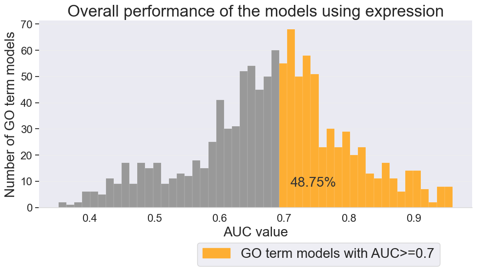
AUC waterfall plot
GO_terms_auc_svm_df =GO_terms_auc_svm_df.sort_values(by=["auc"], ascending=False)plt.rcParams['figure.figsize'] = (12, 9)
drugs = GO_terms_auc_svm_df.index
rhos = GO_terms_auc_svm_df["auc"]
percentage = round((sum(rhos>0.69)/len(rhos))*100,1)
fig, ax = plt.subplots()
#colors = ['#208EA3' if (x < 0.5) else '#A4C61A' for x in rhos ]
colors = ['#C9C9C9' if (x < 0.69) else "#6492CA" for x in rhos ]
ax.bar(
x=drugs,
height=rhos,
edgecolor=colors,
linewidth=2
)
plt.xticks([])
plt.yticks(fontsize=28)
# First, let's remove the top, right and left spines (figure borders)
# which really aren't necessary for a bar chart.
# Also, make the bottom spine gray instead of black.
ax.spines['top'].set_visible(False)
ax.spines['right'].set_visible(False)
ax.spines['left'].set_visible(False)
ax.spines['bottom'].set_visible(False)
#ax.spines['bottom'].set_color('#DDDDDD')
# Second, remove the ticks as well.
ax.tick_params(bottom=False, left=False)
# Third, add a horizontal grid (but keep the vertical grid hidden).
# Color the lines a light gray as well.
ax.set_axisbelow(False)
ax.yaxis.grid(False)
#ax.yaxis.grid(True, color='#EEEEEE')
ax.xaxis.grid(False)
# Add labels and a title. Note the use of `labelpad` and `pad` to add some
# extra space between the text and the tick labels.
ax.set_xlabel('SVM models', labelpad=-30, color='#333333',fontsize=50)
ax.set_ylabel('AUC-ROC value', labelpad=15, color='#333333',fontsize=50)
ax.set_title('', color='#333333',
weight='bold')
colors2 = {'High confidence drugs (r>0.5)':'#A4C61A'}
labels = list(colors2.keys())
handles = [plt.Rectangle((0,0),1,1, color=colors2[label]) for label in labels]
#plt.legend(handles, labels,fontsize=40, loc="lower left",bbox_to_anchor=(0, -0.215))
plt.text(77, 0.32, str(percentage)+"%", fontsize=60,color='#000000')
plt.ylim((-0.1,1.1))
# Make the chart fill out the figure better.
fig.tight_layout()
fig.savefig(resultsdir+'WaterfallModelsSVM.png', transparent=True)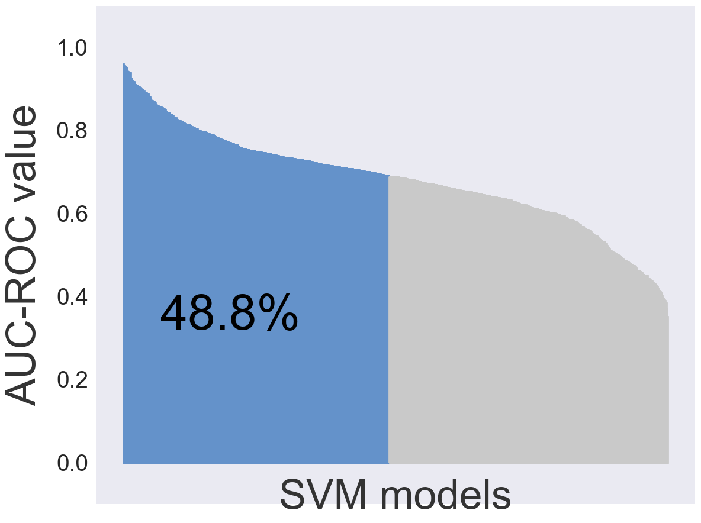
AUC boxplot by parents
# Add number of parents
number_parents = {}
levels = {}
for i in range(0,len(GO_terms_auc_svm_df.index)):
term = GO_terms_auc_svm_df.index[i]
number_parents[GO_terms_auc_svm_df.index[i]]=len([source for source, _ in dG.in_edges(term)])
levels[GO_terms_auc_svm_df.index[i]]=level_number[term]-1
levels = pd.DataFrame.from_dict(levels, orient='index')
number_parents = pd.DataFrame.from_dict(number_parents, orient='index')
GO_terms_auc_svm_df = pd.concat([GO_terms_auc_svm_df, levels,number_parents], axis=1)
GO_terms_auc_svm_df.columns = ["auc","levels","parents"]GO_terms_auc_svm_df = GO_terms_auc_svm_df.sort_values(by=["levels"], ascending=True)GO_terms_auc_svm_df.head()| auc | levels | parents | |
|---|---|---|---|
| GO:1901029 | 0.959991 | 0 | 10 |
| GO:0070374 | 0.793109 | 0 | 3 |
| GO:0043552 | 0.792174 | 0 | 3 |
| GO:0003157 | 0.790148 | 0 | 2 |
| GO:0090314 | 0.790000 | 0 | 7 |
c = ['#E8384F', '#FD817D', '#FDAE33','#EECC16', '#A4C61A', '#37A862',"#208EA3","#3B6EAB"]
df = px.data.tips()
fig = px.box(GO_terms_auc_svm_df, x="levels", y="auc",
color="levels",
color_discrete_sequence=c,
width =600,
height=400,
template="simple_white",
labels=dict(levels="Level of GO hierarchy", auc="AUROC")
)
fig.update_traces(width=0.9)
fig.add_shape( # add a horizontal "target" line
type="line", line_color="salmon", line_width=3, opacity=1, line_dash="dot",
x0=0, x1=1, xref="paper", y0=0.7, y1=0.7, yref="y"
)
fig.update_layout(
title=dict(text="<b> AUC value grouped by level of GO hierarchy <b>",
x=0.5,
y=0.9,
font=dict(size=20),
xanchor='center',
yanchor='top'),
xaxis=dict(ticks="", showticklabels=False, showgrid=False, zeroline=False),
yaxis=dict(ticks="", showticklabels=True, showgrid=True, zeroline=False),
# yaxis_range=[min(yy.flatten()),max(yy.flatten())],
# xaxis_range=[min(xx.flatten()),max(xx.flatten())],
legend=dict(x=1.1, y=1, orientation="v",font=dict(size=16)),
paper_bgcolor='rgba(0,0,0,0)',
plot_bgcolor='rgba(0,0,0,0)',
font=dict(family='Roboto',color= "#36382E",size=20)
)
fig.show()
# pio.write_image(fig, resultsdir+"AUC_levels.png", width=600, height=400,scale=8)Unable to display output for mime type(s): application/vnd.plotly.v1+jsonTOP 15 PREDICTED GO TERMS
top15goterms= np.array(GO_terms_auc_svm_df.sort_values(by=["auc"], ascending=False)[0:15].index)Get Top GO term names
top15goterms_1 = []
for goterm in top15goterms:
top15goterms_1.append(goterm+"_"+str(1))
real_go_info_mod_best = real_go_info[real_go_info.GO_term.isin(top15goterms_1)]
real_go_info_mod_best.GO_term = real_go_info_mod_best.GO_term.str.replace("_1","")top15goterms_auc = GO_terms_auc_svm_df.sort_values(by=["auc"], ascending=False)[0:15].reset_index()
top15goterms_auc.columns=["GO_term","auc","levels","parents"]top15goterms_auc = top15goterms_auc.merge(real_go_info_mod_best[real_go_info_mod_best["GO_term"].isin(top15goterms)], on="GO_term")top15goterms_auc| GO_term | auc | levels | parents | Name | layer_number | |
|---|---|---|---|---|---|---|
| 0 | GO:1901029 | 0.959991 | 0 | 10 | Negative regulation of mitochondrial outer membrane permeabilization involved in apoptotic signaling pathway (1) | 0.0 |
| 1 | GO:0044342 | 0.956590 | 1 | 1 | Type b pancreatic cell proliferation (1) | 1.0 |
| 2 | GO:0002326 | 0.955918 | 0 | 2 | B cell lineage commitment (1) | 0.0 |
| 3 | GO:0007006 | 0.955500 | 3 | 2 | Mitochondrial membrane organization (1) | 3.0 |
| 4 | GO:1902236 | 0.954857 | 0 | 6 | Negative regulation of endoplasmic reticulum stress-induced intrinsic apoptotic signaling pathway (1) | 0.0 |
| 5 | GO:1900118 | 0.953573 | 0 | 3 | Negative regulation of execution phase of apoptosis (1) | 0.0 |
| 6 | GO:0030279 | 0.950408 | 1 | 3 | Negative regulation of ossification (1) | 1.0 |
| 7 | GO:0051452 | 0.949592 | 1 | 1 | Intracellular ph reduction (1) | 1.0 |
| 8 | GO:0033033 | 0.944694 | 0 | 3 | Negative regulation of myeloid cell apoptotic process (1) | 0.0 |
| 9 | GO:0060020 | 0.944502 | 0 | 1 | Bergmann glial cell differentiation (1) | 0.0 |
| 10 | GO:0048743 | 0.941837 | 0 | 11 | Positive regulation of skeletal muscle fiber development (1) | 0.0 |
| 11 | GO:0097345 | 0.940950 | 1 | 5 | Mitochondrial outer membrane permeabilization (1) | 1.0 |
| 12 | GO:0006959 | 0.940779 | 3 | 1 | Humoral immune response (1) | 3.0 |
| 13 | GO:1901863 | 0.940703 | 1 | 3 | Positive regulation of muscle tissue development (1) | 1.0 |
| 14 | GO:0030890 | 0.939581 | 0 | 9 | Positive regulation of b cell proliferation (1) | 0.0 |
plt.rcParams['figure.figsize'] = (16, 22)
fig, ax = plt.subplots()
rhos_top=top15goterms_auc["auc"][0:10]
drugs_top=top15goterms_auc["GO_term"][0:10]
colors = [CB_color_cycle[2] if (x < 0.5) else "#6492CA" for x in rhos_top ]
bars = ax.bar(
x=drugs_top,
height=rhos_top,
edgecolor="none",
linewidth=1,
color = colors,
width=0.9
)
#plt.yticks(fontsize=30)
plt.yticks([])
plt.xticks([])
# First, let's remove the top, right and left spines (figure borders)
# which really aren't necessary for a bar chart.
# Also, make the bottom spine gray instead of black.
ax.spines['top'].set_visible(False)
ax.spines['right'].set_visible(False)
ax.spines['left'].set_visible(False)
ax.spines['bottom'].set_color('#DDDDDD')
# Third, add a horizontal grid (but keep the vertical grid hidden).
# Color the lines a light gray as well.
ax.set_axisbelow(True)
#ax.yaxis.grid(False, color='#EEEEEE')
ax.xaxis.grid(False)
#plt.xticks(rotation=80,fontsize=40)
# Add text annotations to the top of the bars.
bar_color = bars[0].get_facecolor()
for bar in bars:
ax.text(
bar.get_x() + bar.get_width() / 2,
bar.get_height() + 0.03,
round(bar.get_height(), 3),
horizontalalignment='center',
#color=bar_color,
color='#000000',
weight='bold',
fontsize=80,
rotation="vertical"
)
i=0
for bar in bars:
ax.text(
bar.get_x() + bar.get_width() / 2,
0.45,
drugs_top[i],
horizontalalignment='center',
#color=bar_color,
color='#000000',
#weight='bold',
fontsize=90,
rotation="vertical"
)
i=i+1
ax.tick_params(bottom=True, left=False, axis='x', which='major', pad=-1)
# Add labels and a title. Note the use of `labelpad` and `pad` to add some
# extra space between the text and the tick labels.
ax.set_xlabel('', labelpad=15, color='#333333')
#ax.set_ylabel('r', labelpad=15, color='#333333',fontsize=30)
ax.set_title('', color='#333333',
weight='bold')
# Make the chart fill out the figure better.
fig.tight_layout()
fig.savefig(resultsdir+'top10svm_models.png', transparent=True)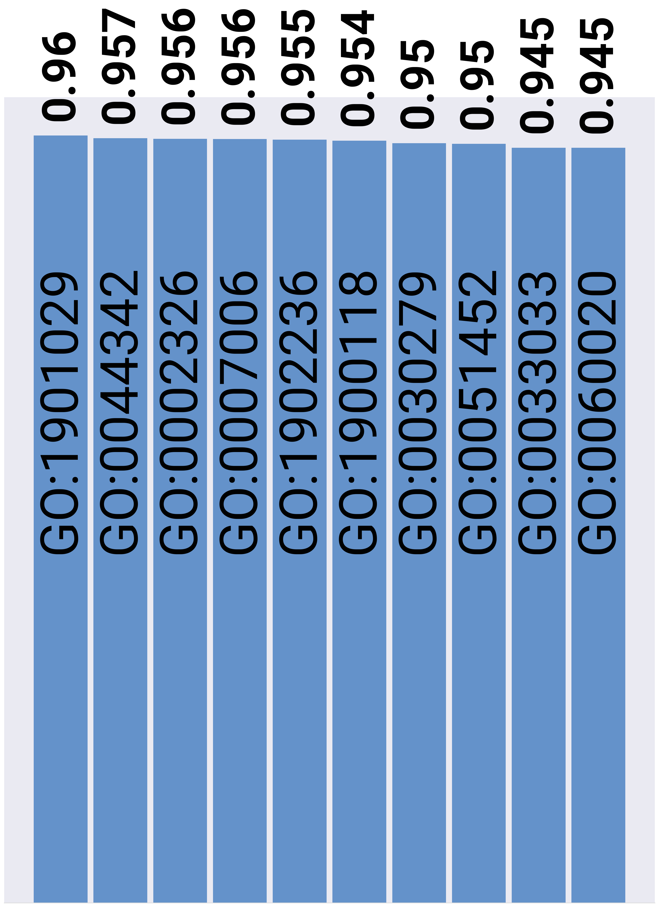
WORST 15 PREDICTED GO TERMS
worst15goterms= np.array(GO_terms_auc_svm_df.sort_values(by=["auc"], ascending=True)[0:15].index)Get Worst GO term names
worst15goterms_1 = []
for goterm in worst15goterms:
worst15goterms_1.append(goterm+"_"+str(1))
real_go_info_mod_worst = real_go_info[real_go_info.GO_term.isin(worst15goterms_1)]
real_go_info_mod_worst.GO_term = real_go_info_mod_worst.GO_term.str.replace("_1","")worst15goterms_auc = GO_terms_auc_svm_df.sort_values(by=["auc"], ascending=True)[0:15].reset_index()
worst15goterms_auc.columns=["GO_term","auc","levels","parents"]worst15goterms_auc.merge(real_go_info_mod_worst[real_go_info_mod_worst["GO_term"].isin(worst15goterms)], on="GO_term")| GO_term | auc | levels | parents | Name | layer_number | |
|---|---|---|---|---|---|---|
| 0 | GO:0032412 | 0.351992 | 3 | 3 | Regulation of ion transmembrane transporter activity (1) | 3.0 |
| 1 | GO:0017157 | 0.363878 | 3 | 5 | Regulation of exocytosis (1) | 3.0 |
| 2 | GO:0014013 | 0.372925 | 1 | 2 | Regulation of gliogenesis (1) | 1.0 |
| 3 | GO:0071356 | 0.384013 | 3 | 2 | Cellular response to tumor necrosis factor (1) | 3.0 |
| 4 | GO:0006163 | 0.385537 | 4 | 2 | Purine nucleotide metabolic process (1) | 4.0 |
| 5 | GO:0048660 | 0.389564 | 2 | 2 | Regulation of smooth muscle cell proliferation (1) | 2.0 |
| 6 | GO:2000146 | 0.390756 | 5 | 3 | Negative regulation of cell motility (1) | 5.0 |
| 7 | GO:0019827 | 0.393045 | 2 | 1 | Stem cell population maintenance (1) | 2.0 |
| 8 | GO:0006475 | 0.395102 | 3 | 1 | Internal protein amino acid acetylation (1) | 3.0 |
| 9 | GO:0015833 | 0.395593 | 5 | 2 | Peptide transport (1) | 5.0 |
| 10 | GO:0097305 | 0.397744 | 2 | 1 | Response to alcohol (1) | 2.0 |
| 11 | GO:0060291 | 0.402420 | 2 | 2 | Long-term synaptic potentiation (1) | 2.0 |
| 12 | GO:0032967 | 0.406570 | 0 | 3 | Positive regulation of collagen biosynthetic process (1) | 0.0 |
| 13 | GO:0009743 | 0.407096 | 4 | 1 | Response to carbohydrate (1) | 4.0 |
| 14 | GO:0001659 | 0.410349 | 1 | 2 | Temperature homeostasis (1) | 1.0 |
AUPR histogram
GO_terms_aupr_svm_df = pd.DataFrame(list(GO_terms_aupr_svm.items()),columns = ['goterm','aupr']).set_index("goterm")
GO_terms_aupr_svm_df = GO_terms_aupr_svm_df.dropna()
GO_terms_aupr_svm_df.sort_values(by=["aupr"], ascending=False).head()| aupr | |
|---|---|
| goterm | |
| GO:0006468 | 0.913629 |
| GO:0001782 | 0.908636 |
| GO:0036211 | 0.886811 |
| GO:0009058 | 0.886773 |
| GO:0033033 | 0.881536 |
# Add number of parents
number_parents = {}
levels = {}
for i in range(0,len(GO_terms_aupr_svm_df.index)):
term = GO_terms_aupr_svm_df.index[i]
number_parents[GO_terms_aupr_svm_df.index[i]]=len([source for source, _ in dG.in_edges(term)])
levels[GO_terms_aupr_svm_df.index[i]]=level_number[term]-1
levels = pd.DataFrame.from_dict(levels, orient='index')
number_parents = pd.DataFrame.from_dict(number_parents, orient='index')
GO_terms_aupr_svm_df = pd.concat([GO_terms_aupr_svm_df, levels,number_parents], axis=1)
GO_terms_aupr_svm_df.columns = ["aupr","levels","parents"]GO_terms_aupr_svm_df = GO_terms_aupr_svm_df.sort_values(by=["levels"], ascending=True)
c = ['#E8384F', '#FD817D', '#FDAE33','#EECC16', '#A4C61A', '#37A862',"#208EA3","#3B6EAB"]
df = px.data.tips()
fig = px.box(GO_terms_aupr_svm_df, x="levels", y="aupr",
color="levels",
color_discrete_sequence=c,
width =600,
height=400,
template="simple_white",
labels=dict(levels="Level of GO hierarchy", aupr="AUPR")
)
fig.update_traces(width=0.9)
fig.add_shape( # add a horizontal "target" line
type="line", line_color="salmon", line_width=3, opacity=1, line_dash="dot",
x0=0, x1=1, xref="paper", y0=0.7, y1=0.7, yref="y"
)
fig.update_layout(
title=dict(text="<b> AUPR value grouped by level of GO hierarchy <b>",
x=0.5,
y=0.9,
font=dict(size=20),
xanchor='center',
yanchor='top'),
xaxis=dict(ticks="", showticklabels=False, showgrid=False, zeroline=False),
yaxis=dict(ticks="", showticklabels=True, showgrid=True, zeroline=False),
# yaxis_range=[min(yy.flatten()),max(yy.flatten())],
# xaxis_range=[min(xx.flatten()),max(xx.flatten())],
legend=dict(x=1.1, y=1, orientation="v",font=dict(size=16)),
paper_bgcolor='rgba(0,0,0,0)',
plot_bgcolor='rgba(0,0,0,0)',
font=dict(family='Roboto',color= "#36382E",size=20)
)
fig.show()
# pio.write_image(fig, resultsdir+"AUPR_levels.png", width=600, height=400,scale=8)Unable to display output for mime type(s): application/vnd.plotly.v1+jsonExample prediction
def f2(goterm):
return gotermcombobox_go = interactive(f2, goterm=widgets.Combobox(options=list(GO_terms_auc_svm_df.sort_values(by=["auc"], ascending=False).index)))Choose drug to study…
display(combobox_go)selected_go = combobox_go.result#auc
plt.rcParams['figure.figsize'] = (4, 2)
fpr, tpr, _ = metrics.roc_curve(slim_matrix_single_neuron.loc[selected_go], platt_matrix.loc[selected_go])
auc = metrics.roc_auc_score(slim_matrix_single_neuron.loc[selected_go], platt_matrix.loc[selected_go])
plt.plot(fpr,tpr,label="data 1, auc="+str(auc))
plt.legend(loc=4)
plt.show()
plot = pd.concat([pd.DataFrame(slim_matrix_single_neuron.loc[selected_go]),pd.DataFrame(platt_matrix.loc[selected_go])], axis=1)
plot.columns = ["slim","probability"]
ax = sns.boxplot(x="slim", y="probability", data=plot,showfliers=False )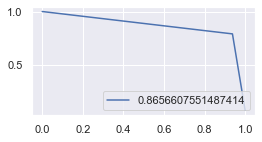
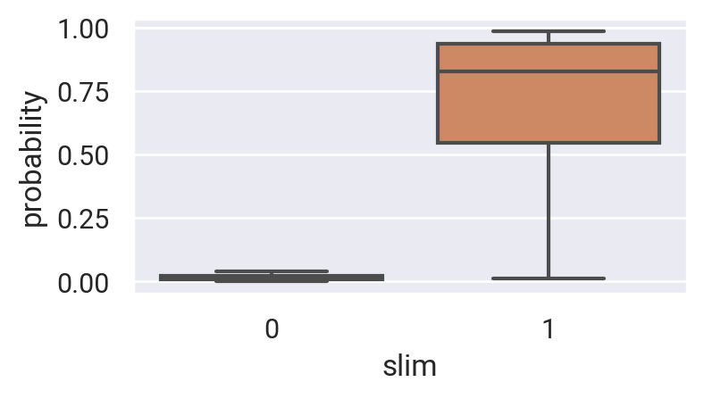
#auc
fpr, tpr, _ = metrics.roc_curve(slim_matrix_single_neuron.loc[selected_go], delta_logits_matrix.loc[selected_go])
auc = metrics.roc_auc_score(slim_matrix_single_neuron.loc[selected_go], delta_logits_matrix.loc[selected_go])
plt.plot(fpr,tpr,label="data 1, auc="+str(auc))
plt.legend(loc=4)
plt.show()
plot = pd.concat([pd.DataFrame(slim_matrix_single_neuron.loc[selected_go]),pd.DataFrame(delta_logits_matrix.loc[selected_go])], axis=1)
plot.columns = ["slim","probability"]
ax = sns.boxplot(x="slim", y="probability", data=plot,showfliers=False )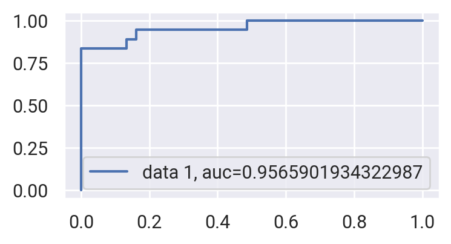
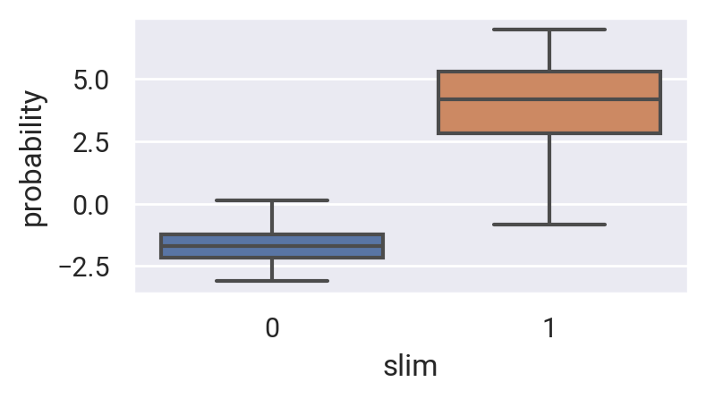
plt.rcParams['figure.figsize'] = (2, 2)
metrics.ConfusionMatrixDisplay.from_predictions(slim_matrix_single_neuron.loc[selected_go], preds_svm_matrix.loc[selected_go])
plt.grid(visible=None)
print("Accuracy:",metrics.accuracy_score(slim_matrix_single_neuron.loc[selected_go], preds_svm_matrix.loc[selected_go]))
print("Precision:",metrics.precision_score(slim_matrix_single_neuron.loc[selected_go], preds_svm_matrix.loc[selected_go]))
print("Recall:",metrics.recall_score(slim_matrix_single_neuron.loc[selected_go], preds_svm_matrix.loc[selected_go])) #TP / (TP+FN)
print("AUC with score:",auc) #TP / (TP+FN)Accuracy: 0.9735849056603774
Precision: 0.7894736842105263
Recall: 0.8333333333333334
AUC with score: 0.9565901934322987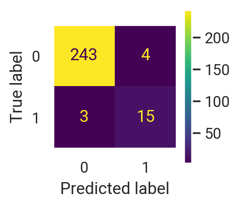
TN - FP
FN - TP
plt.rcParams['figure.figsize'] = (4, 2)
precision, recall, thresholds = metrics.precision_recall_curve(slim_matrix_single_neuron.loc[selected_go], preds_svm_matrix.loc[selected_go])
auc_precision_recall = metrics.auc(recall, precision)
plt.plot(recall, precision,label=str(auc_precision_recall))
plt.legend(loc=4)
plt.show()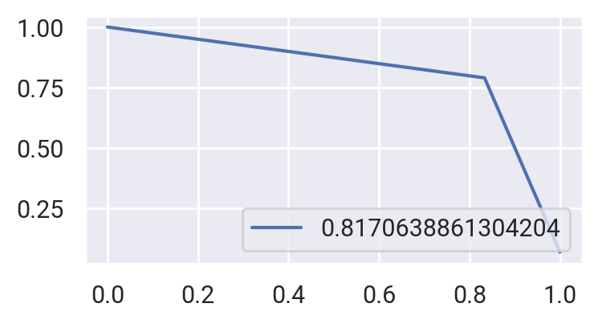
METRICS drugs
auc_drugs = {}
aupr_drugs = {}
precision_drugs = {}
for drug in list(slim_matrix_single_neuron.columns):
if slim_matrix_single_neuron.loc[:,drug].sum() ==0:
continue
#fpr, tpr, _ = metrics.roc_curve(slim_matrix_single_neuron.loc[:,drug], logits_matrix.loc[:,drug])
#auc_drugs[drug] = metrics.auc(fpr, tpr)
auc_drugs[drug] = metrics.roc_auc_score(slim_matrix_single_neuron.loc[:,drug], platt_matrix.loc[:,drug])
precision, recall, thresholds = metrics.precision_recall_curve(slim_matrix_single_neuron.loc[:,drug], platt_matrix.loc[:,drug])
aupr_drugs[drug] = metrics.auc(recall, precision)
precision_drugs[drug] = metrics.precision_score(slim_matrix_single_neuron.loc[:,drug], preds_svm_matrix.loc[:,drug])
auc_drugs_df = pd.DataFrame(list(auc_drugs.items()),columns = ['goterm','auc']).set_index("goterm")
auc_drugs_df = auc_drugs_df.dropna()
aupr_drugs_df = pd.DataFrame(list(aupr_drugs.items()),columns = ['goterm','aupr']).set_index("goterm")
aupr_drugs_df = aupr_drugs_df.dropna()
precision_drugs_df = pd.DataFrame(list(precision_drugs.items()),columns = ['goterm','precision']).set_index("goterm")
precision_drugs_df = precision_drugs_df.dropna()AUC histogram drugs
sns.set(rc={'figure.figsize':(10,6)})
fig, ax = plt.subplots()
perc = str(round((100*len(auc_drugs_df[auc_drugs_df["auc"]>0.7])/len(auc_drugs_df)),2))+"%"
N, bins, patches = plt.hist(auc_drugs_df, color=CB_color_cycle[6],bins=50, linewidth=0.1)
for i in range(0,len(bins)-1):
if bins[i]>0.7:
patches[i].set_facecolor(CB_color_cycle[5])
plt.yticks(fontsize=16)
plt.xticks(fontsize=16)
ax.spines['top'].set_visible(False)
ax.spines['right'].set_visible(False)
ax.spines['left'].set_visible(False)
ax.spines['bottom'].set_color('#DDDDDD')
# Second, remove the ticks as well.
ax.tick_params(bottom=False, left=True)
# Third, add a horizontal grid (but keep the vertical grid hidden).
# Color the lines a light gray as well.
ax.set_axisbelow(True)
ax.yaxis.grid(True, color='#EEEEEE')
ax.xaxis.grid(False)
plt.xlabel("AUC value", fontsize=20)
plt.ylabel("Number of drugs", fontsize=20)
colors2 = {'Drugs with AUC>=0.7':CB_color_cycle[5]}
labels = list(colors2.keys())
handles = [plt.Rectangle((0,0),1,1, color=colors2[label]) for label in labels]
plt.legend(handles, labels,fontsize=20, loc="lower left", bbox_to_anchor=(0.35,-0.35))
plt.text(0.79, 6, str(perc), fontsize=20,color='#333333')
plt.title("Overall performance by drugs using mutations", fontsize=24)
# con el que mejor funciona es con la suma normal del attribution
fig.tight_layout()
fig.savefig(resultsdir+'drugsAUC.png', transparent=True)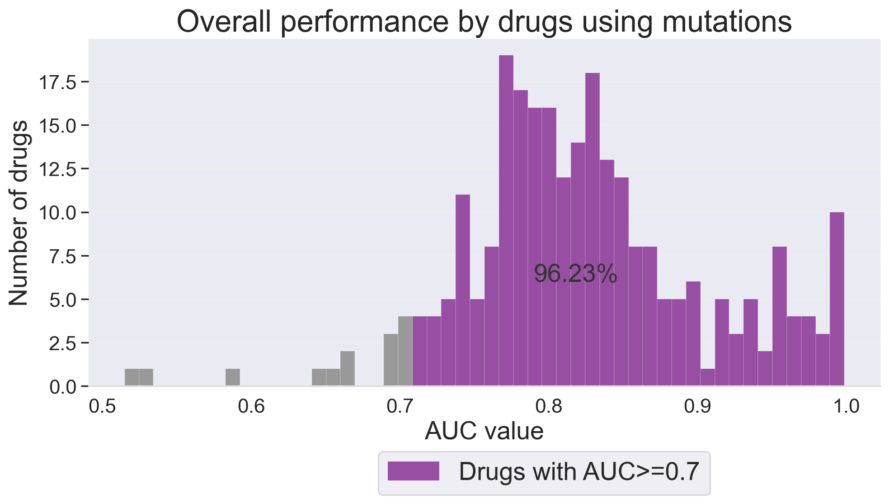
AUC waterfall plot drugs
auc_drugs_df =auc_drugs_df.sort_values(by=["auc"], ascending=False)plt.rcParams['figure.figsize'] = (12, 9)
drugs = auc_drugs_df.index
rhos = auc_drugs_df["auc"]
percentage = round((sum(rhos>0.69)/len(rhos))*100,1)
fig, ax = plt.subplots()
#colors = ['#208EA3' if (x < 0.5) else '#A4C61A' for x in rhos ]
colors = ['#C9C9C9' if (x < 0.69) else "#B678BE" for x in rhos ]
ax.bar(
x=drugs,
height=rhos,
edgecolor=colors,
linewidth=3
)
plt.xticks([])
plt.yticks(fontsize=28)
# First, let's remove the top, right and left spines (figure borders)
# which really aren't necessary for a bar chart.
# Also, make the bottom spine gray instead of black.
ax.spines['top'].set_visible(False)
ax.spines['right'].set_visible(False)
ax.spines['left'].set_visible(False)
ax.spines['bottom'].set_visible(False)
#ax.spines['bottom'].set_color('#DDDDDD')
# Second, remove the ticks as well.
ax.tick_params(bottom=False, left=False)
# Third, add a horizontal grid (but keep the vertical grid hidden).
# Color the lines a light gray as well.
ax.set_axisbelow(False)
ax.yaxis.grid(False)
#ax.yaxis.grid(True, color='#EEEEEE')
ax.xaxis.grid(False)
# Add labels and a title. Note the use of `labelpad` and `pad` to add some
# extra space between the text and the tick labels.
ax.set_xlabel('Drugs', labelpad=-30, color='#333333',fontsize=50)
ax.set_ylabel('AUC-ROC value', labelpad=15, color='#333333',fontsize=50)
ax.set_title('', color='#333333',
weight='bold')
colors2 = {'High confidence drugs (r>0.5)':'#A4C61A'}
labels = list(colors2.keys())
handles = [plt.Rectangle((0,0),1,1, color=colors2[label]) for label in labels]
#plt.legend(handles, labels,fontsize=40, loc="lower left",bbox_to_anchor=(0, -0.215))
plt.text(77, 0.32, str(percentage)+"%", fontsize=60,color='#000000')
plt.ylim((-0.1,1.1))
# Make the chart fill out the figure better.
fig.tight_layout()
fig.savefig(resultsdir+'WaterfallModelsSVM_drugs.png', transparent=True)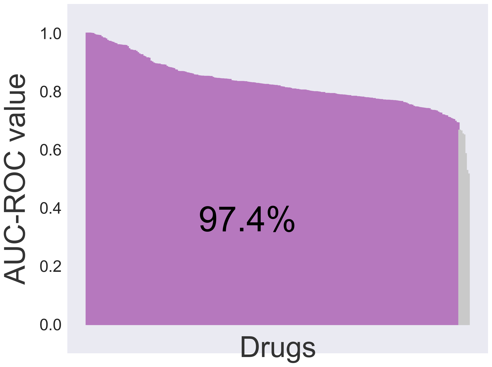
AUPR histogram drugs
sns.set(rc={'figure.figsize':(5,3)})
perc = str(round((100*len(aupr_drugs_df[aupr_drugs_df["aupr"]>0.69])/len(aupr_drugs_df)),2))+"%"
N, bins, patches = plt.hist(aupr_drugs_df, color=CB_color_cycle[6],bins=50, linewidth=0.1)
for i in range(0,len(bins)-1):
if bins[i]>0.69:
patches[i].set_facecolor(CB_color_cycle[3])
plt.xlabel("AUPR drugs", fontsize=16)
plt.title(perc, fontsize=16)Text(0.5, 1.0, '33.58%')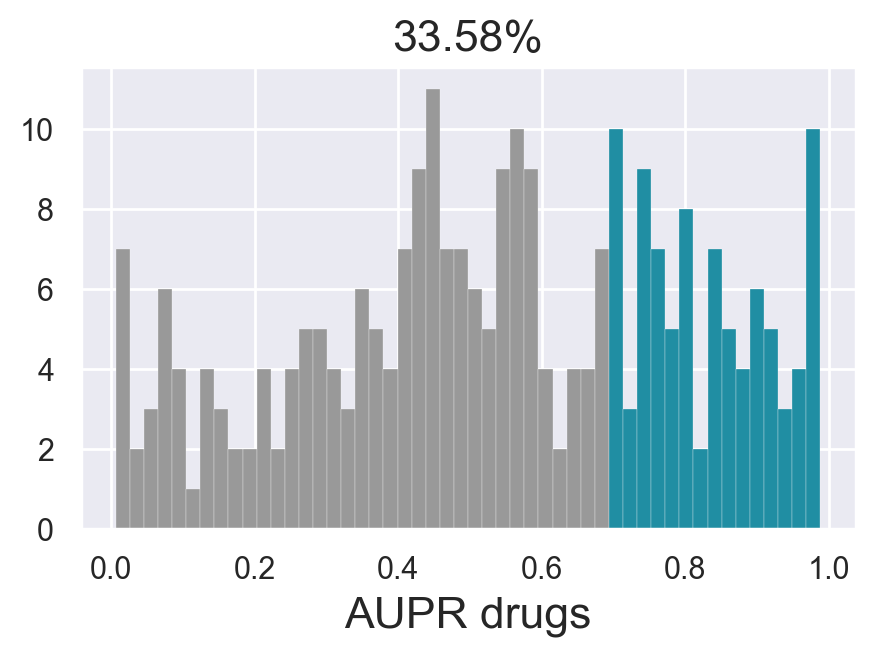
Example drug prediction
def f(drug):
return drugpredictions_nodes = []
for goterm in list(platt_matrix.index):
predictions_nodes.append(goterm+"_"+str(1))# add names to go terms
real_go_info_svm= real_go_info[real_go_info.GO_term.isin(predictions_nodes)]
real_go_info_svm.GO_term = real_go_info_svm.GO_term.str.replace("_1","")combobox = interactive(f, drug=widgets.Combobox(options=list(precision_drugs_df.sort_values(by=["precision"], ascending=False).index)))Choose drug to study…
display(combobox)selected_drug_name = combobox.resultsns.set(rc={'figure.figsize':(4,2)})
#auc
fpr, tpr, _ = metrics.roc_curve(slim_matrix_single_neuron.loc[:,selected_drug_name], platt_matrix.loc[:,selected_drug_name] )
auc = metrics.roc_auc_score(slim_matrix_single_neuron.loc[:,selected_drug_name], platt_matrix.loc[:,selected_drug_name])
plt.plot(fpr,tpr,label="data 1, auc="+str(auc))
plt.legend(loc=4)
plt.show()
plot = pd.concat([pd.DataFrame(slim_matrix_single_neuron.loc[:,selected_drug_name]),pd.DataFrame(platt_matrix.loc[:,selected_drug_name])], axis=1)
plot.columns = ["slim","svm score"]
ax = sns.boxplot(x="slim", y="svm score", data=plot,showfliers=False )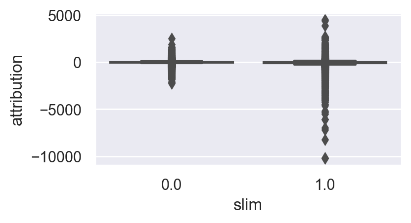
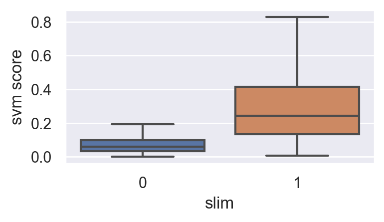
plot = pd.concat([pd.DataFrame(slim_matrix.loc[:,selected_drug_name]),pd.DataFrame(attribution_data_annotated.loc[:,selected_drug_name]*1e4)], axis=1)
plot.columns = ["slim","attribution"]
ax = sns.boxplot(x="slim", y="attribution", data=plot,showfliers=True )metrics.ConfusionMatrixDisplay.from_predictions(slim_matrix_single_neuron.loc[:,selected_drug_name].round(), preds_svm_matrix.loc[:,selected_drug_name])<sklearn.metrics._plot.confusion_matrix.ConfusionMatrixDisplay at 0x2ce2b82e0>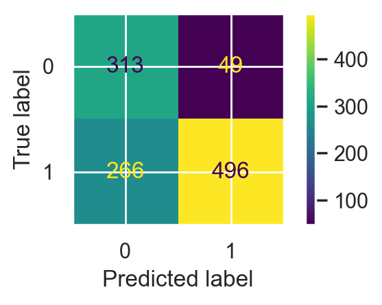
print("Accuracy:",metrics.accuracy_score(slim_matrix_single_neuron.loc[:,selected_drug_name], preds_svm_matrix.loc[:,selected_drug_name]))
print("Precision:",metrics.precision_score(slim_matrix_single_neuron.loc[:,selected_drug_name], preds_svm_matrix.loc[:,selected_drug_name]))
print("Recall:",metrics.recall_score(slim_matrix_single_neuron.loc[:,selected_drug_name], preds_svm_matrix.loc[:,selected_drug_name])) #TP / (TP+FN)
print("AUC with score:",auc) Accuracy: 0.7197508896797153
Precision: 0.9100917431192661
Recall: 0.6509186351706037
AUC with score: 0.8904018213192963# LOS LOGITS DE TEST!!
train_drug_logs = pd.DataFrame(delta_logits_matrix.loc[:,selected_drug_name]).reset_index()
train_drug_logs.columns = ["GO_term","probability"]
train_drug_logs = train_drug_logs.merge(real_go_info_svm, on="GO_term")
train_drug_logs.sort_values(by=["probability"], ascending=False).head(10)| GO_term | probability | Name | layer_number | |
|---|---|---|---|---|
| 329 | GO:0006939 | 2.871769 | Smooth muscle contraction (1) | 3.0 |
| 381 | GO:0048041 | 2.568268 | Focal adhesion assembly (1) | 2.0 |
| 144 | GO:0002318 | 2.533049 | Myeloid progenitor cell differentiation (1) | 0.0 |
| 408 | GO:0048008 | 2.529048 | Platelet-derived growth factor receptor signaling pathway (1) | 1.0 |
| 595 | GO:0032526 | 2.437785 | Response to retinoic acid (1) | 1.0 |
| 822 | GO:0046651 | 2.300822 | Lymphocyte proliferation (1) | 4.0 |
| 183 | GO:0048608 | 2.222701 | Reproductive structure development (1) | 3.0 |
| 458 | GO:0048839 | 2.066365 | Inner ear development (1) | 3.0 |
| 793 | GO:1901888 | 2.058388 | Regulation of cell junction assembly (1) | 2.0 |
| 956 | GO:0002327 | 1.921062 | Immature b cell differentiation (1) | 0.0 |
Final model SVM
Once the models have been cross-validated we create the final models using all samples…
GO_terms_auc_svm_final = {}
GO_terms_aupr_svm_final = {}
GO_terms_precision_svm_final = {}
models_svm = {}
# Perform logistics
for goterm in sparseGO_terms:
#print(goterm)
goterm_drugs = slim_matrix.loc[[goterm+"_"+str(1)]].values.flatten()
if sum(goterm_drugs) <= 16:
continue
list_nodes = []
for i in range(1,7):
list_nodes.append(goterm+"_"+str(i))
score = attribution_data_annotated.loc[list_nodes].T
score_mod = score.divide(score.std()).fillna(0)
X_train = score_mod
X_test = score_mod
y_train = goterm_drugs
y_test = goterm_drugs
#gamma = 1/(X_train.shape[1]*X_train.to_numpy().var())
gamma="scale"
C=1
svm_model = svm.SVC(C=C,gamma=gamma, kernel='rbf',
class_weight="balanced",
tol=0.001,
probability=True,
random_state=1234)
# fit the model with data
svm_model.fit(X_train,y_train)
y_pred=svm_model.predict(X_test)
#auc
y_pred_proba = svm_model.predict_proba(X_test)[::,1] # platt values
#y_pred_proba = svm_model.decision_function(X_test)
GO_terms_auc_svm_final[goterm] = metrics.roc_auc_score(y_test, y_pred_proba)
precision, recall, thresholds = metrics.precision_recall_curve(y_test, y_pred_proba)
GO_terms_aupr_svm_final[goterm] = metrics.auc(recall, precision)
GO_terms_precision_svm_final[goterm] = metrics.precision_score(y_test, y_pred)
models_svm[goterm]=svm_modellen(models_svm)1124Final model AUC
GO_terms_auc_svm_df_final = pd.DataFrame(list(GO_terms_auc_svm_final.items()),columns = ['goterm','auc']).set_index("goterm")
GO_terms_auc_svm_df_final = GO_terms_auc_svm_df_final.dropna()
GO_terms_auc_svm_df_final.sort_values(by=["auc"], ascending=False).head()| auc | |
|---|---|
| goterm | |
| GO:0030890 | 0.995511 |
| GO:1901029 | 0.994437 |
| GO:0051452 | 0.993673 |
| GO:0030279 | 0.993469 |
| GO:1901863 | 0.991582 |
sns.set(rc={'figure.figsize':(6,4)})
perc = str(round((100*len(GO_terms_auc_svm_df_final[GO_terms_auc_svm_df_final["auc"]>0.7])/len(GO_terms_auc_svm_df_final)),2))+"%"
N, bins, patches = plt.hist(GO_terms_auc_svm_df_final, color=CB_color_cycle[6],bins=50, linewidth=0.1)
for i in range(0,len(bins)-1):
if bins[i]>0.7:
patches[i].set_facecolor(CB_color_cycle[2])
plt.xlabel("AUC (logistic 1)", fontsize=16)
plt.title(perc, fontsize=16)
# con el que mejor funciona es con la suma normal del attribution Text(0.5, 1.0, '93.42%')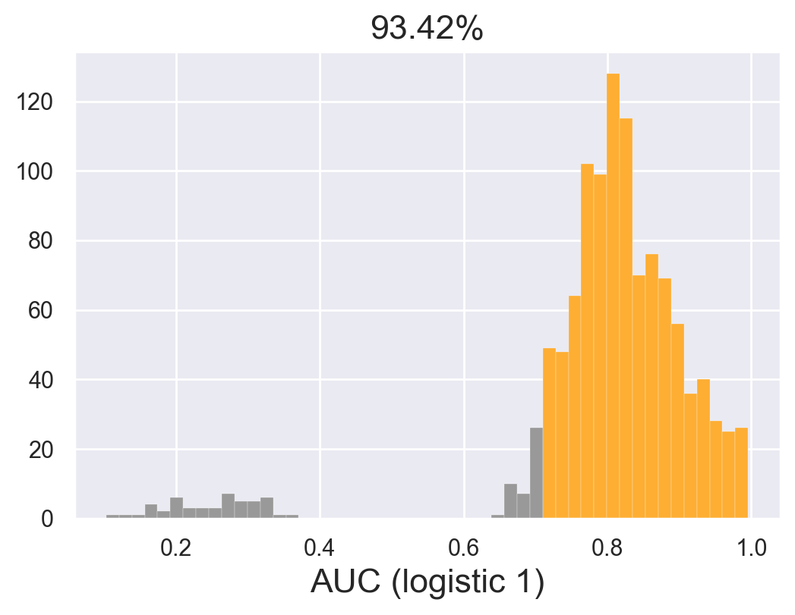
Final model AUPR
GO_terms_aupr_svm_df_final = pd.DataFrame(list(GO_terms_aupr_svm_final.items()),columns = ['goterm','aupr']).set_index("goterm")
GO_terms_aupr_svm_df_final = GO_terms_aupr_svm_df_final.dropna()
GO_terms_aupr_svm_df_final.sort_values(by=["aupr"], ascending=False).head()| aupr | |
|---|---|
| goterm | |
| GO:0009058 | 0.974362 |
| GO:0030890 | 0.965743 |
| GO:0033033 | 0.965598 |
| GO:0097345 | 0.960797 |
| GO:0010467 | 0.959505 |
# TENGO PROBLEMA CON EL RECALL
sns.set(rc={'figure.figsize':(5,3)})
perc = str(round((100*len(GO_terms_aupr_svm_df_final[GO_terms_aupr_svm_df_final["aupr"]>0.7])/len(GO_terms_aupr_svm_df_final)),2))+"%"
N, bins, patches = plt.hist(GO_terms_aupr_svm_df_final, color=CB_color_cycle[6],bins=50, linewidth=0.1)
for i in range(0,len(bins)-1):
if bins[i]>0.7:
patches[i].set_facecolor(CB_color_cycle[3])
plt.xlabel("AUPR", fontsize=16)
plt.title(perc, fontsize=16)Text(0.5, 1.0, '23.31%')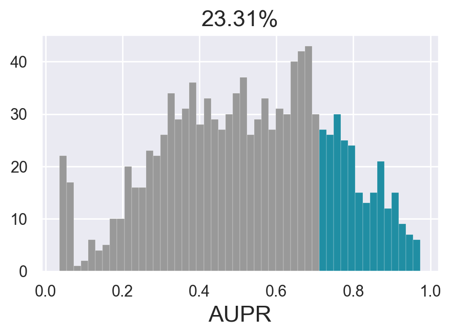
Predict for a new drug
Make predictions
unknown = list(set(attribution_data_all.columns)-set(attribution_data_annotated.columns))Get the probabilities for all unknown drugs
predictions = {}
distances = {}
probabilities_unknown = pd.DataFrame()
preds_unknown = pd.DataFrame()
for drug in unknown:
probabilities = {}
for goterm in models_svm.keys():
list_nodes = list(models_svm[goterm].feature_names_in_) # Extract the feature names from the model (those are the attributions we need)
score = attribution_data_all.loc[list_nodes][drug].to_frame().T
score_mod = score.divide(attribution_data_annotated.loc[list_nodes].T.std()).fillna(0) #divide by std of each neuron, only use drugs that trained the models
predictions[goterm]=models_svm[goterm].predict(score_mod)
probabilities[goterm] = models_svm[goterm].predict_proba(score_mod)[::,1] # platt values
# distances[goterm] = models_svm[goterm].decision_function(score_mod)
drug_probs = pd.DataFrame.from_dict(probabilities).T
drug_probs.columns = [drug]
drug_preds = pd.DataFrame.from_dict(predictions).T
drug_preds.columns = [drug]
probabilities_unknown = pd.concat([probabilities_unknown,drug_probs], axis=1)
preds_unknown = pd.concat([preds_unknown,drug_preds], axis=1)
print(drug)# To import dataframe created before
with open(resultsdir+'probabilities_unknown_SVM.pkl', 'rb') as dictionary_file:
probabilities_unknown = pickle.load(dictionary_file)
with open(resultsdir+'preds_unknown_SVM.pkl', 'rb') as dictionary_file:
preds_unknown = pickle.load(dictionary_file) Study drug with unknown MOA
Choose drug with unknown MOA…
combobox_u = interactive(f, drug=widgets.Combobox(options=unknown))predictions_nodes = []
for goterm in list(platt_matrix.index):
predictions_nodes.append(goterm+"_"+str(1))# add names to go terms
real_go_info_svm= real_go_info[real_go_info.GO_term.isin(predictions_nodes)]
real_go_info_svm.GO_term = real_go_info_svm.GO_term.str.replace("_1","")display(combobox_u)selected_drug_u_name = combobox_u.resultpredictions_df = pd.DataFrame.from_dict(preds_unknown.loc[:,selected_drug_u_name]).reset_index()
predictions_df.columns = ["GO_term","predictions"]probabilities_df = pd.DataFrame.from_dict(probabilities_unknown.loc[:,selected_drug_u_name]).reset_index()
probabilities_df.columns = ["GO_term","probability"]
probabilities_df = probabilities_df.merge(real_go_info_svm, on="GO_term")
probabilities_df = probabilities_df.merge(predictions_df, on="GO_term")
probabilities_df.loc[probabilities_df["layer_number"] <=3].sort_values(by=["probability"], ascending=False).head(30)| GO_term | probability | Name | layer_number | predictions | |
|---|---|---|---|---|---|
| 15 | GO:0007051 | 0.775651 | Spindle organization (1) | 3.0 | 1.0 |
| 25 | GO:0045930 | 0.728483 | Negative regulation of mitotic cell cycle (1) | 3.0 | 1.0 |
| 312 | GO:0033033 | 0.668570 | Negative regulation of myeloid cell apoptotic process (1) | 0.0 | 1.0 |
| 85 | GO:0001783 | 0.648156 | B cell apoptotic process (1) | 1.0 | 1.0 |
| 241 | GO:0018105 | 0.645704 | Peptidyl-serine phosphorylation (1) | 2.0 | 1.0 |
| 579 | GO:0031328 | 0.645487 | Positive regulation of cellular biosynthetic process (1) | 3.0 | 1.0 |
| 365 | GO:0007098 | 0.597286 | Centrosome cycle (1) | 3.0 | 1.0 |
| 789 | GO:1900118 | 0.562231 | Negative regulation of execution phase of apoptosis (1) | 0.0 | 1.0 |
| 444 | GO:1901990 | 0.539374 | Regulation of mitotic cell cycle phase transition (1) | 3.0 | 1.0 |
| 636 | GO:0042633 | 0.538572 | Hair cycle (1) | 2.0 | 1.0 |
| 73 | GO:0071456 | 0.526585 | Cellular response to hypoxia (1) | 1.0 | 1.0 |
| 888 | GO:1901988 | 0.526572 | Negative regulation of cell cycle phase transition (1) | 3.0 | 1.0 |
| 242 | GO:0018107 | 0.515176 | Peptidyl-threonine phosphorylation (1) | 1.0 | 1.0 |
| 362 | GO:0007030 | 0.511032 | Golgi organization (1) | 1.0 | 1.0 |
| 465 | GO:0007517 | 0.510204 | Muscle organ development (1) | 3.0 | 1.0 |
| 532 | GO:0010557 | 0.509768 | Positive regulation of macromolecule biosynthetic process (1) | 3.0 | 0.0 |
| 502 | GO:0008284 | 0.500000 | Positive regulation of cell population proliferation (1) | 3.0 | 0.0 |
| 741 | GO:0055001 | 0.500000 | Muscle cell development (1) | 3.0 | 1.0 |
| 795 | GO:1902236 | 0.500000 | Negative regulation of endoplasmic reticulum stress-induced intrinsic apoptotic signaling pathway (1) | 0.0 | 1.0 |
| 233 | GO:0045944 | 0.481732 | Positive regulation of transcription by rna polymerase ii (1) | 1.0 | 0.0 |
| 321 | GO:2000811 | 0.478198 | Negative regulation of anoikis (1) | 0.0 | 1.0 |
| 227 | GO:0006366 | 0.474951 | Transcription by rna polymerase ii (1) | 3.0 | 0.0 |
| 511 | GO:0009410 | 0.466373 | Response to xenobiotic stimulus (1) | 3.0 | 1.0 |
| 776 | GO:0072593 | 0.458202 | Reactive oxygen species metabolic process (1) | 3.0 | 1.0 |
| 78 | GO:0001701 | 0.448882 | In utero embryonic development (1) | 3.0 | 1.0 |
| 177 | GO:0007283 | 0.445234 | Spermatogenesis (1) | 3.0 | 1.0 |
| 319 | GO:0097194 | 0.419988 | Execution phase of apoptosis (1) | 2.0 | 1.0 |
| 86 | GO:0002903 | 0.417616 | Negative regulation of b cell apoptotic process (1) | 0.0 | 1.0 |
| 614 | GO:0035094 | 0.412038 | Response to nicotine (1) | 1.0 | 1.0 |
| 1117 | GO:2001243 | 0.409103 | Negative regulation of intrinsic apoptotic signaling pathway (1) | 2.0 | 1.0 |
sum(probabilities_df["predictions"] ==1)303sum(probabilities_df["predictions"] ==0)821Probability < 0.5 doesn’t mean it does not belong to the class, a probability of for example 0.2 can represent a 1 (annotated to MoA)
Modify probabilities
Take into account the annotations each GO term has (general GO terms are easier to predict as they have more annotations)
For drug with unknown MOA…
sum_annotations = slim_matrix_single_neuron.T.sum()/slim_matrix_single_neuron.shape[1]
logits_apriori = np.log(sum_annotations/(1-sum_annotations))
logits_apost= np.log(probabilities_df["probability"]/(1-probabilities_df["probability"]))
delta_logits =logits_apost.to_numpy()- logits_apriori.to_numpy()
delta_logits_df = pd.DataFrame(delta_logits)
delta_logits_df.columns = ["delta_logits"]
probabilities_mod = probabilities_df.merge(delta_logits_df, left_index=True,right_index=True)probabilities_mod.loc[probabilities_mod["predictions"] ==1].loc[probabilities_mod["layer_number"] <= 7].sort_values(by=["delta_logits"], ascending=False).head(30)| GO_term | probability | Name | layer_number | predictions | delta_logits | |
|---|---|---|---|---|---|---|
| 15 | GO:0007051 | 0.775651 | Spindle organization (1) | 3.0 | 1.0 | 3.801391 |
| 312 | GO:0033033 | 0.668570 | Negative regulation of myeloid cell apoptotic process (1) | 0.0 | 1.0 | 3.207249 |
| 85 | GO:0001783 | 0.648156 | B cell apoptotic process (1) | 1.0 | 1.0 | 2.917688 |
| 789 | GO:1900118 | 0.562231 | Negative regulation of execution phase of apoptosis (1) | 0.0 | 1.0 | 2.811113 |
| 364 | GO:0007059 | 0.651932 | Chromosome segregation (1) | 5.0 | 1.0 | 2.648874 |
| 25 | GO:0045930 | 0.728483 | Negative regulation of mitotic cell cycle (1) | 3.0 | 1.0 | 2.600911 |
| 795 | GO:1902236 | 0.500000 | Negative regulation of endoplasmic reticulum stress-induced intrinsic apoptotic signaling pathway (1) | 0.0 | 1.0 | 2.560893 |
| 365 | GO:0007098 | 0.597286 | Centrosome cycle (1) | 3.0 | 1.0 | 2.530027 |
| 362 | GO:0007030 | 0.511032 | Golgi organization (1) | 1.0 | 1.0 | 2.350877 |
| 376 | GO:0098813 | 0.474213 | Nuclear chromosome segregation (1) | 4.0 | 1.0 | 2.073193 |
| 762 | GO:0070925 | 0.703152 | Organelle assembly (1) | 4.0 | 1.0 | 2.069600 |
| 903 | GO:0072384 | 0.336307 | Organelle transport along microtubule (1) | 2.0 | 1.0 | 2.000421 |
| 86 | GO:0002903 | 0.417616 | Negative regulation of b cell apoptotic process (1) | 0.0 | 1.0 | 1.974177 |
| 370 | GO:0045786 | 0.624233 | Negative regulation of cell cycle (1) | 5.0 | 1.0 | 1.917603 |
| 367 | GO:0010948 | 0.603975 | Negative regulation of cell cycle process (1) | 4.0 | 1.0 | 1.905513 |
| 1058 | GO:2000669 | 0.341573 | Negative regulation of dendritic cell apoptotic process (1) | 0.0 | 1.0 | 1.796355 |
| 1056 | GO:0070233 | 0.356845 | Negative regulation of t cell apoptotic process (1) | 1.0 | 1.0 | 1.764358 |
| 839 | GO:1902166 | 0.329441 | Negative regulation of intrinsic apoptotic signaling pathway in response to dna damage by p53 class mediator (1) | 0.0 | 1.0 | 1.741929 |
| 368 | GO:0032465 | 0.382860 | Regulation of cytokinesis (1) | 2.0 | 1.0 | 1.740942 |
| 321 | GO:2000811 | 0.478198 | Negative regulation of anoikis (1) | 0.0 | 1.0 | 1.731163 |
| 319 | GO:0097194 | 0.419988 | Execution phase of apoptosis (1) | 2.0 | 1.0 | 1.698511 |
| 16 | GO:0031023 | 0.312643 | Microtubule organizing center organization (1) | 4.0 | 1.0 | 1.664852 |
| 888 | GO:1901988 | 0.526572 | Negative regulation of cell cycle phase transition (1) | 3.0 | 1.0 | 1.640736 |
| 636 | GO:0042633 | 0.538572 | Hair cycle (1) | 2.0 | 1.0 | 1.613210 |
| 994 | GO:1900182 | 0.296416 | Positive regulation of protein localization to nucleus (1) | 1.0 | 1.0 | 1.537597 |
| 965 | GO:0030705 | 0.274210 | Cytoskeleton-dependent intracellular transport (1) | 4.0 | 1.0 | 1.532160 |
| 977 | GO:0031648 | 0.261530 | Protein destabilization (1) | 0.0 | 1.0 | 1.522862 |
| 289 | GO:0032469 | 0.301677 | Endoplasmic reticulum calcium ion homeostasis (1) | 1.0 | 1.0 | 1.514119 |
| 465 | GO:0007517 | 0.510204 | Muscle organ development (1) | 3.0 | 1.0 | 1.499437 |
| 614 | GO:0035094 | 0.412038 | Response to nicotine (1) | 1.0 | 1.0 | 1.494658 |
names2 = list(probabilities_mod.loc[probabilities_mod["predictions"] ==1].loc[probabilities_mod["layer_number"] <=7].sort_values(by=["delta_logits"], ascending=False)["Name"].head(30))
terms2 = list(probabilities_mod.loc[probabilities_mod["predictions"] ==1].loc[probabilities_mod["layer_number"] <=7].sort_values(by=["delta_logits"], ascending=False)["GO_term"].head(30))
logits2 = list(probabilities_mod.loc[probabilities_mod["predictions"] ==1].loc[probabilities_mod["layer_number"] <=7].sort_values(by=["delta_logits"], ascending=False)["delta_logits"].head(30))
names2 = [x[:-4] for x in names2] for i in range(0,len(names2)):
print(terms2[i],names2[i],logits2[i])GO:0007051 Spindle organization 3.801390702868236
GO:0033033 Negative regulation of myeloid cell apoptotic process 3.2072492134319956
GO:0001783 B cell apoptotic process 2.9176875271685683
GO:1900118 Negative regulation of execution phase of apoptosis 2.8111130136057216
GO:0007059 Chromosome segregation 2.64887443203506
GO:0045930 Negative regulation of mitotic cell cycle 2.6009108234102625
GO:1902236 Negative regulation of endoplasmic reticulum stress-induced intrinsic apoptotic signaling pathway 2.5608925567659226
GO:0007098 Centrosome cycle 2.530026738008422
GO:0007030 Golgi organization 2.3508774173095186
GO:0098813 Nuclear chromosome segregation 2.0731926893576196
GO:0070925 Organelle assembly 2.069600192282952
GO:0072384 Organelle transport along microtubule 2.0004213788686807
GO:0002903 Negative regulation of b cell apoptotic process 1.9741768883148958
GO:0045786 Negative regulation of cell cycle 1.917603030826096
GO:0010948 Negative regulation of cell cycle process 1.9055131265535517
GO:2000669 Negative regulation of dendritic cell apoptotic process 1.7963554850648258
GO:0070233 Negative regulation of t cell apoptotic process 1.7643576360799753
GO:1902166 Negative regulation of intrinsic apoptotic signaling pathway in response to dna damage by p53 class mediator 1.7419293617961054
GO:0032465 Regulation of cytokinesis 1.7409418248944983
GO:2000811 Negative regulation of anoikis 1.7311634175406592
GO:0097194 Execution phase of apoptosis 1.6985112888037164
GO:0031023 Microtubule organizing center organization 1.6648522832794037
GO:1901988 Negative regulation of cell cycle phase transition 1.640735739239383
GO:0042633 Hair cycle 1.6132096412865522
GO:1900182 Positive regulation of protein localization to nucleus 1.5375973554160984
GO:0030705 Cytoskeleton-dependent intracellular transport 1.5321597954461827
GO:0031648 Protein destabilization 1.5228619022250793
GO:0032469 Endoplasmic reticulum calcium ion homeostasis 1.5141189889858477
GO:0007517 Muscle organ development 1.499437003178439
GO:0035094 Response to nicotine 1.494657812504115# import libraries
import pandas as pd
import matplotlib.pyplot as plt
import numpy as np
%matplotlib inline
# set font
plt.rcParams['font.family'] = 'sans-serif'
plt.rcParams['font.sans-serif'] = 'Roboto'
# set the style of the axes and the text color
plt.rcParams['axes.edgecolor']='#333F4B'
plt.rcParams['axes.linewidth']=0.8
plt.rcParams['xtick.color']='#333F4B'
plt.rcParams['ytick.color']='#333F4B'
plt.rcParams['text.color']='#333F4B'
# create some fake data
percentages = pd.Series(logits2,
index=[s.title() for s in names2])
df = pd.DataFrame({'percentage' : percentages})
df = df.sort_values(by='percentage')
# we first need a numeric placeholder for the y axis
my_range=list(range(1,len(df.index)+1))
fig, ax = plt.subplots(figsize=(4,17))
# create for each expense type an horizontal line that starts at x = 0 with the length
# represented by the specific value.
plt.hlines(y=my_range, xmin=0, xmax=df['percentage'], color='#208EA3', alpha=0.2, linewidth=14)
# create for each value type a dot at the level of the value
plt.plot(df['percentage'], my_range, "o", markersize=14, color='#208EA3', alpha=0.8)
# set labels
ax.set_xlabel(' Δlogit', fontsize=25, fontweight='black', color = '#36382E')
ax.set_ylabel('')
ax.set_facecolor(color="white")
ax.set_alpha(1)
# set axis
ax.tick_params(axis='both', which='major', labelsize=32)
plt.yticks(my_range, df.index)
# add an horizonal label for the y axis
fig.text(-0.58, 0.862, 'MoA (GO terms)', fontsize=27, fontweight='black', color = '#36382E')
fig.text(0.2, 0.9, selected_drug_u_name.capitalize(), fontsize=32, fontweight='black', color = '#36382E')
# .upper() capitalize
# change the style of the axis spines
ax.spines['top'].set_visible(False)
ax.spines['right'].set_visible(False)
ax.spines['left'].set_bounds((1, len(my_range)))
ax.set_xlim(0,max(logits2)+0.1)
ax.spines['left'].set_position(('outward', 8))
ax.spines['bottom'].set_position(('outward', 5))
plt.savefig(resultsdir+selected_drug_u_name+'_top_terms.png', dpi=300, bbox_inches='tight')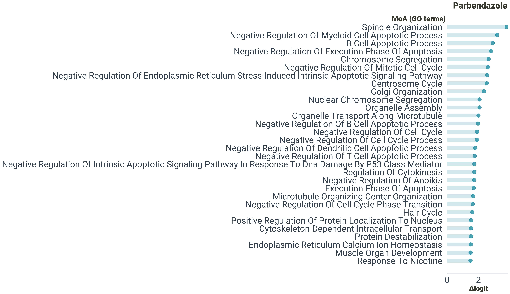
For known drug…
display(combobox)selected_drug_name = combobox.result# LOS LOGITS DE TEST!!
train_drug_logs = pd.DataFrame(platt_matrix.loc[:,selected_drug_name]).reset_index()
train_drug_logs.columns = ["GO_term","probability"]
train_drug_logs = train_drug_logs.merge(real_go_info_svm, on="GO_term")train_drug_logs.loc[train_drug_logs["layer_number"] <=3].sort_values(by=["probability"], ascending=False).head(30)| GO_term | probability | Name | layer_number | |
|---|---|---|---|---|
| 183 | GO:0048608 | 0.742225 | Reproductive structure development (1) | 3.0 |
| 381 | GO:0048041 | 0.737675 | Focal adhesion assembly (1) | 2.0 |
| 535 | GO:0010628 | 0.646147 | Positive regulation of gene expression (1) | 3.0 |
| 181 | GO:0045137 | 0.645515 | Development of primary sexual characteristics (1) | 3.0 |
| 329 | GO:0006939 | 0.637615 | Smooth muscle contraction (1) | 3.0 |
| 532 | GO:0010557 | 0.628009 | Positive regulation of macromolecule biosynthetic process (1) | 3.0 |
| 579 | GO:0031328 | 0.620431 | Positive regulation of cellular biosynthetic process (1) | 3.0 |
| 408 | GO:0048008 | 0.615540 | Platelet-derived growth factor receptor signaling pathway (1) | 1.0 |
| 502 | GO:0008284 | 0.594571 | Positive regulation of cell population proliferation (1) | 3.0 |
| 776 | GO:0072593 | 0.591717 | Reactive oxygen species metabolic process (1) | 3.0 |
| 558 | GO:0021700 | 0.587295 | Developmental maturation (1) | 3.0 |
| 192 | GO:0003254 | 0.571930 | Regulation of membrane depolarization (1) | 1.0 |
| 869 | GO:1902533 | 0.567760 | Positive regulation of intracellular signal transduction (1) | 3.0 |
| 144 | GO:0002318 | 0.544781 | Myeloid progenitor cell differentiation (1) | 0.0 |
| 120 | GO:0045860 | 0.539516 | Positive regulation of protein kinase activity (1) | 3.0 |
| 741 | GO:0055001 | 0.538092 | Muscle cell development (1) | 3.0 |
| 10 | GO:0043410 | 0.531527 | Positive regulation of mapk cascade (1) | 2.0 |
| 133 | GO:0061138 | 0.520278 | Morphogenesis of a branching epithelium (1) | 3.0 |
| 527 | GO:0010035 | 0.514162 | Response to inorganic substance (1) | 3.0 |
| 1040 | GO:0042113 | 0.509569 | B cell activation (1) | 3.0 |
| 595 | GO:0032526 | 0.508940 | Response to retinoic acid (1) | 1.0 |
| 164 | GO:0030183 | 0.500000 | B cell differentiation (1) | 2.0 |
| 793 | GO:1901888 | 0.500000 | Regulation of cell junction assembly (1) | 2.0 |
| 1045 | GO:0051899 | 0.500000 | Membrane depolarization (1) | 2.0 |
| 406 | GO:0038084 | 0.491700 | Vascular endothelial growth factor signaling pathway (1) | 1.0 |
| 227 | GO:0006366 | 0.489305 | Transcription by rna polymerase ii (1) | 3.0 |
| 42 | GO:0001503 | 0.478874 | Ossification (1) | 3.0 |
| 12 | GO:0070371 | 0.477843 | Erk1 and erk2 cascade (1) | 2.0 |
| 64 | GO:0001656 | 0.476283 | Metanephros development (1) | 3.0 |
| 1022 | GO:0048015 | 0.460363 | Phosphatidylinositol-mediated signaling (1) | 3.0 |
ax = sns.boxplot(x=slim_matrix_single_neuron.loc[train_drug_logs["GO_term"],selected_drug_name], y=train_drug_logs.set_index("GO_term")["probability"], data=plot,showfliers=True )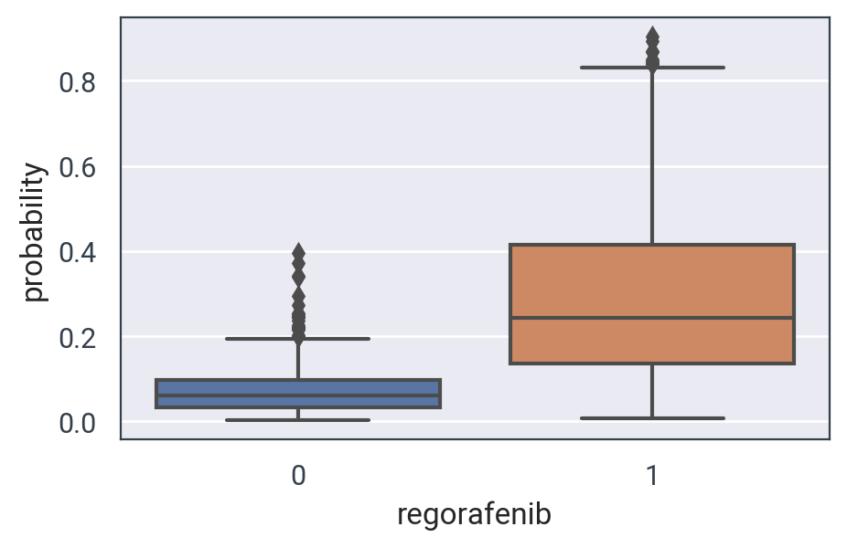
# same as before
sum_annotations = slim_matrix_single_neuron.T.sum()/slim_matrix_single_neuron.shape[1]
logits_apriori= np.log(sum_annotations/(1-sum_annotations))logits_apost= np.log(train_drug_logs["probability"]/(1-train_drug_logs["probability"]))
delta_logits = logits_apost.to_numpy()-logits_apriori.to_numpy()
delta_logits_df = pd.DataFrame(delta_logits)
delta_logits_df.columns = ["delta_logits"]
train_drug_mod = train_drug_logs.merge(delta_logits_df, left_index=True,right_index=True)train_drug_mod.loc[train_drug_mod["layer_number"] <=3].sort_values(by=["delta_logits"], ascending=False).head(30)| GO_term | probability | Name | layer_number | delta_logits | |
|---|---|---|---|---|---|
| 329 | GO:0006939 | 0.637615 | Smooth muscle contraction (1) | 3.0 | 2.871769 |
| 381 | GO:0048041 | 0.737675 | Focal adhesion assembly (1) | 2.0 | 2.568268 |
| 144 | GO:0002318 | 0.544781 | Myeloid progenitor cell differentiation (1) | 0.0 | 2.533049 |
| 408 | GO:0048008 | 0.615540 | Platelet-derived growth factor receptor signaling pathway (1) | 1.0 | 2.529048 |
| 595 | GO:0032526 | 0.508940 | Response to retinoic acid (1) | 1.0 | 2.437785 |
| 183 | GO:0048608 | 0.742225 | Reproductive structure development (1) | 3.0 | 2.222701 |
| 458 | GO:0048839 | 0.391941 | Inner ear development (1) | 3.0 | 2.066365 |
| 793 | GO:1901888 | 0.500000 | Regulation of cell junction assembly (1) | 2.0 | 2.058388 |
| 956 | GO:0002327 | 0.382026 | Immature b cell differentiation (1) | 0.0 | 1.921062 |
| 192 | GO:0003254 | 0.571930 | Regulation of membrane depolarization (1) | 1.0 | 1.903704 |
| 181 | GO:0045137 | 0.645515 | Development of primary sexual characteristics (1) | 3.0 | 1.806630 |
| 1029 | GO:0035909 | 0.293492 | Aorta morphogenesis (1) | 1.0 | 1.801732 |
| 1118 | GO:0097530 | 0.339315 | Granulocyte migration (1) | 3.0 | 1.786297 |
| 24 | GO:0045840 | 0.365727 | Positive regulation of mitotic nuclear division (1) | 1.0 | 1.756150 |
| 65 | GO:0072075 | 0.273943 | Metanephric mesenchyme development (1) | 0.0 | 1.705507 |
| 958 | GO:0045580 | 0.389135 | Regulation of t cell differentiation (1) | 3.0 | 1.684905 |
| 406 | GO:0038084 | 0.491700 | Vascular endothelial growth factor signaling pathway (1) | 1.0 | 1.636301 |
| 474 | GO:0007585 | 0.259741 | Respiratory gaseous exchange by respiratory system (1) | 2.0 | 1.632898 |
| 936 | GO:0035584 | 0.282146 | Calcium-mediated signaling using intracellular calcium source (1) | 0.0 | 1.627051 |
| 776 | GO:0072593 | 0.591717 | Reactive oxygen species metabolic process (1) | 3.0 | 1.621405 |
| 479 | GO:0050910 | 0.256674 | Detection of mechanical stimulus involved in sensory perception of sound (1) | 0.0 | 1.616889 |
| 961 | GO:0055003 | 0.261761 | Cardiac myofibril assembly (1) | 0.0 | 1.582183 |
| 741 | GO:0055001 | 0.538092 | Muscle cell development (1) | 3.0 | 1.562711 |
| 558 | GO:0021700 | 0.587295 | Developmental maturation (1) | 3.0 | 1.560039 |
| 609 | GO:0034103 | 0.287738 | Regulation of tissue remodeling (1) | 1.0 | 1.546250 |
| 1045 | GO:0051899 | 0.500000 | Membrane depolarization (1) | 2.0 | 1.534347 |
| 590 | GO:0032355 | 0.380108 | Response to estradiol (1) | 1.0 | 1.532244 |
| 129 | GO:0051894 | 0.341633 | Positive regulation of focal adhesion assembly (1) | 0.0 | 1.520410 |
| 64 | GO:0001656 | 0.476283 | Metanephros development (1) | 3.0 | 1.492026 |
| 428 | GO:0007266 | 0.373714 | Rho protein signal transduction (1) | 2.0 | 1.468985 |
ax = sns.boxplot(x=slim_matrix_single_neuron.loc[train_drug_mod["GO_term"],selected_drug_name], y=train_drug_mod.set_index("GO_term")["delta_logits"], data=plot,showfliers=True)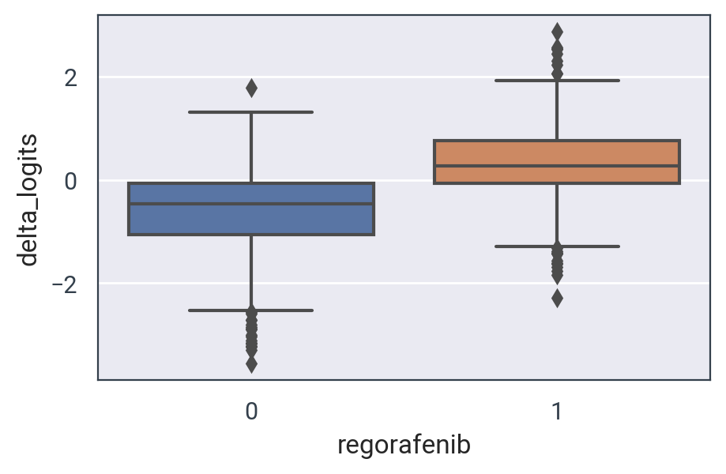
SVM GO TERM 2D representation
from sklearn.manifold import TSNE
import plotly.express as pxChoose go to study…
display(combobox_go)selected_goterm = combobox_go.resultreal_go_info[real_go_info["GO_term"]==selected_goterm+"_1"]| GO_term | Name | layer_number | |
|---|---|---|---|
| 24 | GO:0007051_1 | Spindle organization (1) | 3.0 |
list_nodes = []
for i in range(1,7):
list_nodes.append(selected_goterm+"_"+str(i))
score = attribution_data_annotated.loc[list_nodes].T
score_mod = score.divide(score.std()).fillna(0)
annotations =slim_matrix_single_neuron.loc[selected_goterm,]
y_predicted = models_svm[selected_goterm].predict(score_mod.astype(float))Plot SVM
View statistics of GOterm
“Perfect” model (with train data)
auc = metrics.roc_auc_score(annotations, models_svm[selected_goterm].decision_function(score_mod.astype(float)))
cnf_matrix = metrics.confusion_matrix(annotations,y_predicted)
print(cnf_matrix)
print("Accuracy:",metrics.accuracy_score(annotations, y_predicted))
print("Precision:",metrics.precision_score(annotations,y_predicted)) # TP / (TP+FP)
print("Recall:",metrics.recall_score(annotations, y_predicted)) #TP / (TP+FN)
print("AUC with score:",auc) [[227 19]
[ 3 16]]
Accuracy: 0.9169811320754717
Precision: 0.45714285714285713
Recall: 0.8421052631578947
AUC with score: 0.9531450577663672TN - FP
FN - TP
En mi opinion interesa mucho el precision, prefiero que haya menos FP no??
Test statistics…
auc = metrics.roc_auc_score(slim_matrix_single_neuron.loc[selected_goterm], platt_matrix.loc[selected_goterm])
cnf_matrix = metrics.confusion_matrix(slim_matrix_single_neuron.loc[selected_goterm], preds_svm_matrix.loc[selected_goterm])
print(cnf_matrix)
print("Accuracy:",metrics.accuracy_score(slim_matrix_single_neuron.loc[selected_goterm], preds_svm_matrix.loc[selected_goterm]))
print("Precision:",metrics.precision_score(slim_matrix_single_neuron.loc[selected_goterm], preds_svm_matrix.loc[selected_goterm]))
print("Recall:",metrics.recall_score(slim_matrix_single_neuron.loc[selected_goterm], preds_svm_matrix.loc[selected_goterm])) #TP / (TP+FN)
print("AUC with score:",auc) #TP / (TP+FN)[[225 21]
[ 6 13]]
Accuracy: 0.8981132075471698
Precision: 0.38235294117647056
Recall: 0.6842105263157895
AUC with score: 0.891313649978605import colorlover as cl
matrix = metrics.confusion_matrix(annotations,y_predicted)
tn, fp, fn, tp = matrix.ravel()
values = [tp, fn, fp, tn]
label_text = ["True Positive", "False Negative", "False Positive", "True Negative"]
labels = ["<b>TP</b>", "<b>FN</b>", "<b>FP</b>", "<b>TN</b>"]
blue = cl.flipper()["seq"]["9"]["Blues"]
red = cl.flipper()["seq"]["9"]["Reds"]
colors = ["#ff3700","#FFA0A0", "#CCE9FF", "#0b8bff"]
trace0 = go.Pie(
labels=label_text,
values=values,
hoverinfo="label+value+percent",
textinfo="text+value",
text=labels,
sort=False,
marker=dict(colors=colors),
insidetextfont={"color": "#36382E"},
rotation=90,
)
layout = go.Layout(
title=dict(text="Confusion Matrix",
x=0.3,
y=0.8,
font=dict(size=14),
xanchor='center',
yanchor='top'),
#margin=dict(l=50, r=50, t=100, b=10),
legend=dict(font={"color": "#36382E"}, orientation="h",x=0.1, y=-0.03),
# plot_bgcolor="#282b38",
# paper_bgcolor="#282b38",
font=dict(family='Roboto',color= "#36382E"),
)
data = [trace0]
figure = go.Figure(data=data, layout=layout)
figureUnable to display output for mime type(s): application/vnd.plotly.v1+jsony_test=annotations
decision_test=y_predicted
fpr, tpr, threshold = metrics.roc_curve(y_test, decision_test)
# AUC Score
auc_score = metrics.roc_auc_score(y_true=y_test, y_score=decision_test)
trace0 = go.Scatter(
x=fpr, y=tpr, mode="lines", name="Test Data", marker={"color": "#ff3700"}
)
layout = go.Layout(
title=dict(text=f"ROC Curve (AUC = {auc_score:.3f})",
x=0.6,
y=0.5,
font=dict(size=20)
),
xaxis=dict(title="False Positive Rate", gridcolor="white"),
yaxis=dict(title="True Positive Rate", gridcolor="white"),
legend=dict(x=0, y=1.05, orientation="h"),
margin=dict(l=100, r=10, t=25, b=40),
# plot_bgcolor="#282b38",
# paper_bgcolor="#282b38",
font=dict(family='Roboto',color= "#36382E"),
)
data = [trace0]
figure = go.Figure(data=data, layout=layout)
figureUnable to display output for mime type(s): application/vnd.plotly.v1+jsonPlot SVM with unknown labels
Voronoi Tessellation
What is a Voronoi Tessellation? Given a set P := {p1, …, pn} of sites, a Voronoi Tessellation is a subdivision of the space into n cells, one for each site in P, with the property that a point q lies in the cell corresponding to a site pi iff d(pi, q) < d(pj, q) for i distinct from j. The segments in a Voronoi Tessellation correspond to all points in the plane equidistant to the two nearest sites. Voronoi Tessellations have applications in computer science.
https://stackoverflow.com/questions/61225052/svm-plot-decision-surface-when-working-with-more-than-2-features
tsne = TSNE(n_components=2, verbose=0,
init="pca",
perplexity=30,
random_state=123
)
z = tsne.fit_transform(score_mod.astype(float)) list_nodes = list(models_svm[selected_goterm].feature_names_in_) # Extract the feature names from the model (those are the attributions we need)
score_unknown = attribution_data_all.loc[list_nodes,unknown].T
score_unknown_mod = score_unknown.divide(score.std()).fillna(0) # normalizey_unknown = np.full(score_unknown_mod.shape[0],2) # 2=unknown MOA
y_pred_unknown = models_svm[selected_goterm].predict(score_unknown_mod.astype(float))# join scores and annotations from known and unknown drugs
all_score = pd.concat([score_mod,score_unknown_mod])
all_y = np.concatenate((annotations,y_unknown)) # 2=unknown MOAPlot T-SNE SVM
from sklearn.neighbors._classification import KNeighborsClassifier
# https://github.com/plotly/dash-sample-apps/blob/main/apps/dash-svm/utils/dash_reusable_components.py
z = tsne.fit_transform(all_score.astype(float))
df = pd.DataFrame()
df["y"] = all_y
df["comp-1"] = z[:,0]
df["comp-2"] = z[:,1]
df["name"] =list(all_score.index)
df = df.sort_values(by=['y'])
df["y"] = df["y"].astype(str)
X,y = all_score.astype(float), all_y
y_predicted = models_svm[selected_goterm].predict(X)
resolution = 300 # 100x100 background pixels
X2d_xmin, X2d_xmax = np.min(z[:,0])-1, np.max(z[:,0])+1
X2d_ymin, X2d_ymax = np.min(z[:,1])-1, np.max(z[:,1])+1
xx, yy = np.meshgrid(np.linspace(X2d_xmin, X2d_xmax, resolution), np.linspace(X2d_ymin, X2d_ymax, resolution))
# approximate Voronoi tesselation on resolution x resolution grid using 1-NN
background_model = KNeighborsClassifier(n_neighbors=1).fit(z, y_predicted)
voronoiBackground = background_model.predict(np.c_[xx.ravel(), yy.ravel()])
voronoiBackground = voronoiBackground.reshape((resolution, resolution))go_name=real_go_info[real_go_info["GO_term"]==selected_goterm+"_1"]["Name"].values[0][:-4]
go_name'Spindle organization'bright_cscale = [[0, "#0b8bff"], [0.5, "#ff3700"],[1, "#36382E"]]
new_cscale = [[0, "#CCE9FF"], [1, "#FFA0A0"]]
trace0 = go.Contour(
x=xx.flatten(),
y=yy.flatten(),
z=voronoiBackground.flatten(),
hoverinfo="none",
showscale=False,
contours=dict(showlines=False),
colorscale=new_cscale,
opacity=0.9,
)
trace1 = go.Contour(
x=xx.flatten(),
y=yy.flatten(),
z=voronoiBackground.flatten(),
showscale=False,
hoverinfo="none",
colorscale=new_cscale,
line=dict(color="#ff3700"),
)
trace2 = go.Scatter(
x=df["comp-1"],
y=df["comp-2"],
mode="markers",
text=df["name"].to_numpy(),
marker=dict(size=7, color=df["y"].to_numpy(int),colorscale=bright_cscale),
showlegend=False
)
legend1 = go.Scatter(
x=[None],
y=[None],
mode="markers",
name="Not annotated<br>to "+selected_goterm,
marker=dict(size=7, color="#0b8bff",symbol='circle'),
)
legend2 = go.Scatter(
x=[None],
y=[None],
mode="markers",
name="Drug annotated<br>to "+selected_goterm,
marker=dict(size=7, color="#ff3700",symbol='circle'),
)
legend3 = go.Scatter(
x=[None],
y=[None],
mode="markers",
name="Unknown MOA<br>annotations",
marker=dict(size=7, color="#36382E",symbol='circle'),
)
layout = go.Layout(
title=dict(text="<b>"+selected_goterm+"</b> "+go_name,
x=0.5,
y=0.92,
font=dict(size=23),
xanchor='center',
yanchor='top'),
xaxis=dict(ticks="", showticklabels=False, showgrid=False, zeroline=False),
yaxis=dict(ticks="", showticklabels=False, showgrid=False, zeroline=False),
yaxis_range=[min(yy.flatten()),max(yy.flatten())],
xaxis_range=[min(xx.flatten()),max(xx.flatten())],
legend=dict(x=0, y=0, orientation="h",font=dict(size=15)),
paper_bgcolor='rgba(0,0,0,0)',
width=600, height=800,
font=dict(family='Roboto',color= "#36382E",size=15)
)
data = [trace0,trace1,trace2,legend2,legend1,legend3]
figure = go.Figure(data=data,layout=layout)
figureUnable to display output for mime type(s): application/vnd.plotly.v1+jsonAdd drugs
# Spindle organization
figure = go.Figure(data=data,layout=layout)
figure.add_annotation(
x=df["comp-1"].loc[df["name"]=="sb-743921"].to_numpy()[0], y=df["comp-2"].loc[df["name"]=="sb-743921"].to_numpy()[0],
xref="x", yref="y",
text="<b>"+'SB-743921'"<b>",
showarrow=True,
font=dict(
# family="Courier New, monospace",
size=19,
color="#000000"
),
align="center",
arrowhead=2,
arrowsize=1,
arrowwidth=2,
arrowcolor="#636363",
ax=-250,
ay=-10,
bordercolor="#636363",
borderwidth=1,
borderpad=4,
bgcolor="#ffffff",
opacity=0.8
)
figure.add_annotation(
x=df["comp-1"].loc[df["name"]=="thapsigargin"].to_numpy()[0], y=df["comp-2"].loc[df["name"]=="thapsigargin"].to_numpy()[0],
xref="x", yref="y",
text="<b>"+'Thapsigargin'"<b>",
showarrow=True,
font=dict(
# family="Courier New, monospace",
size=19,
color="#000000"
),
align="center",
arrowhead=2,
arrowsize=1,
arrowwidth=2,
arrowcolor="#636363",
ax=-60,
ay=-90,
bordercolor="#636363",
borderwidth=1,
borderpad=4,
bgcolor="#ffffff",
opacity=0.8
)
figure.add_annotation(
x=df["comp-1"].loc[df["name"]=="triptolide"].to_numpy()[0], y=df["comp-2"].loc[df["name"]=="triptolide"].to_numpy()[0],
xref="x", yref="y",
text="<b>"+'Triptolide'"<b>",
showarrow=True,
font=dict(
# family="Courier New, monospace",
size=19,
color="#000000"
),
align="center",
arrowhead=2,
arrowsize=1,
arrowwidth=2,
arrowcolor="#636363",
ax=-130,
ay=-80,
bordercolor="#636363",
borderwidth=1,
borderpad=4,
bgcolor="#ffffff",
opacity=0.8
)
figure.add_annotation(
x=df["comp-1"].loc[df["name"]=="gw843682x"].to_numpy()[0], y=df["comp-2"].loc[df["name"]=="gw843682x"].to_numpy()[0],
xref="x", yref="y",
text="<b>"+'GW843682X'"<b>",
showarrow=True,
font=dict(
# family="Courier New, monospace",
size=19,
color="#000000"
),
align="center",
arrowhead=2,
arrowsize=1,
arrowwidth=2,
arrowcolor="#636363",
ax=-110,
ay=70,
bordercolor="#636363",
borderwidth=1,
borderpad=4,
bgcolor="#ffffff",
opacity=0.8
)Unable to display output for mime type(s): application/vnd.plotly.v1+jsonTop Genes
from captum.attr import LayerDeepLift, DeepLiftdef get_compound_names(file_name):
compounds = []
with open(file_name, 'r') as fi:
for line in fi:
tokens = line.strip().split('\t')
compounds.append([tokens[1],tokens[2]])
return compoundsdrugs = get_compound_names(inputdir+"compound_names.txt")
drugs.pop(0)['SMILE', 'Name']def f(drug):
return drugnum_neurons_per_GO = 6
median_cell_features = np.median(cell_features,axis=0) # to use as a reference
median_drug_features = np.genfromtxt(computer+"SparseGO_code/data/glucose_fingerprint.txt", delimiter=',')def get_layer_attribution_genes(input_data,baseline,selected_drug_data):
#dl = DeepLift(model, multiply_by_inputs=True) # CHOOSE LAYER TO STUDY
dl = DeepLift(model)
dl_attr_test = dl.attribute(input_data,baseline)
dl_attr_test_sum = dl_attr_test.cpu().detach().numpy().sum(0) # se suman las attributions para cada sample
# dl_attr_test_norm_sum = dl_attr_test_sum / np.linalg.norm(dl_attr_test_sum, ord=1) # se normaliza
dl_attr_test_norm_sum = dl_attr_test_sum
# gene2id_mapping WAS USED TO CREATE THE FIRST LAYER OF THE NETWORK, SO THAT INPUT DATA MATCHES THE FIRST LAYER
attribution_data = pd.DataFrame(np.column_stack((np.array(list(gene2id_mapping.keys())),dl_attr_test_norm_sum[0:len(gene2id_mapping.keys())])), columns=["Gene",selected_drug_data[1]])
attribution_data[[selected_drug_data[1]]] = attribution_data[[selected_drug_data[1]]].apply(pd.to_numeric).round(8)
return attribution_datafirst = 1
# Obtain the top GO terms on all layers for each drug
for selected_drug_data in drugs:
selected_drug =selected_drug_data[0] # DRUG smile
selected_drug_features = []
drug_specific_features=drug_features[drug2id_mapping[selected_drug]] # features of drug
for i in range(len(cell2id_mapping)): # make all combinations of selected_drug and cell types
selected_drug_features.append(np.concatenate((cell_features[i], drug_specific_features), axis=None))
selected_drug_features = torch.FloatTensor(np.array(selected_drug_features))
# Data for deeplift
input_data = torch.autograd.Variable(selected_drug_features.cuda(0))
baseline = torch.FloatTensor(np.concatenate((median_cell_features, median_drug_features), axis=None))
baseline = torch.reshape(baseline, (1, baseline.size()[0]))
baseline = torch.autograd.Variable(baseline.cuda(0))
attribution_data_drug = get_layer_attribution_genes(input_data,baseline,selected_drug_data)
# top_scores = attribution_data_drug.nlargest(5, selected_drug_data[1]) # PROBAR TMB CON ABS VALUE
# top_genes.loc[selected_drug_data[1]] = top_scores['Gene'].values # PERO IGUAL HABRIA QUE ELIMINAR ANTES LOS QUE TIENEN ALTO SCORE EN TODOS
if first==1:
attribution_data_all_genes = attribution_data_drug
first=0
else:
attribution_data_all_genes = pd.concat([attribution_data_all_genes,attribution_data_drug.iloc[:,1]], axis=1)
print(selected_drug_data[1])attribution_data_all_genes = attribution_data_all_genes.set_index("Gene")top_var = attribution_data_all_genes.var(axis=1).sort_values(axis=0, ascending=False)[0:1000000] # Almost no changeattribution_data_all_genes_var = attribution_data_all_genes.loc[top_var.index.values]attribution_data_all_genes_var.head()| (-)-Parthenolide | (5Z)-7-Oxozeaenol | 5-Fluorouracil | 681640 | A-443654 | A-484954 | A-770041 | A-83-01 | Acadesine | ACY-1215 | ... | Vemurafenib | VER-155008 | Vorapaxar | vorinostat:carboplatin (1:1 mol/mol) | vorinostat:navitoclax (4:1 mol/mol) | VU0155056 | WZ4002 | WZ8040 | YL54 | Zebularine | |
|---|---|---|---|---|---|---|---|---|---|---|---|---|---|---|---|---|---|---|---|---|---|
| Gene | |||||||||||||||||||||
| TNF | -0.647627 | -1.171123 | -0.798656 | -1.056030 | -1.482396 | -0.351407 | -1.223713 | -0.432469 | -0.355250 | -1.175542 | ... | -0.150800 | -0.713235 | -0.225855 | -0.834043 | -1.694794 | -0.321265 | -0.451579 | -0.623499 | -0.315067 | -0.188699 |
| TLR4 | 0.424753 | 0.587436 | 0.552789 | 0.811383 | 1.290940 | 0.170548 | 0.649595 | 0.153363 | 0.155758 | 0.671745 | ... | 0.261201 | 0.585952 | 0.462414 | 0.527991 | 0.756867 | 0.326152 | 0.669734 | 0.668688 | 0.348900 | 0.281724 |
| CX3CL1 | 0.367396 | 0.850156 | 0.397639 | 0.463275 | 1.145052 | 0.093489 | 0.278140 | 0.087945 | 0.085774 | 0.503575 | ... | -0.033222 | 0.333330 | 0.384190 | 0.375685 | 0.785719 | 0.193030 | 0.303128 | 0.316458 | 0.240599 | 0.139607 |
| NCKAP1L | -0.209777 | -0.407460 | -0.355179 | -0.555746 | -0.655136 | -0.109196 | -0.420126 | -0.102194 | -0.131356 | -0.715699 | ... | -0.008355 | -0.403133 | -0.178399 | -0.604647 | -0.783917 | -0.156935 | -0.544116 | -0.704079 | -0.086063 | -0.150185 |
| VAV1 | -0.113726 | -0.504159 | -0.213520 | -0.656914 | -0.371759 | -0.107983 | -0.040083 | -0.144649 | -0.099499 | -0.107369 | ... | -0.077634 | -0.122759 | -0.110199 | -0.115432 | 0.150526 | -0.045423 | 0.037265 | -0.052557 | -0.074338 | -0.039058 |
5 rows × 790 columns
attribution_data_all_genes_var.to_excel(resultsdir+'attribution_data_all_genes.xlsx', index=True)top_genes = {}
num_genes = 50
# loop through each column in the dataframe
for col in attribution_data_all_genes_var.columns:
# get the top n scores and their index (i.e., row name)
top_scores = abs(attribution_data_all_genes_var[col]).nlargest(num_genes)
top_scores_idx = top_scores.index
top_genes[col] = top_scores_idx.values.tolist()
# 'scores': top_scores.values.tolist(),# create DataFrame from dictionary
df_top_genes = pd.DataFrame.from_dict(top_genes, orient='index')
df_top_genes.columns = ['Gene{}'.format(i) for i in range(1, num_genes+1)]df_top_genes.head(10)| Gene1 | Gene2 | Gene3 | Gene4 | Gene5 | Gene6 | Gene7 | Gene8 | Gene9 | Gene10 | ... | Gene41 | Gene42 | Gene43 | Gene44 | Gene45 | Gene46 | Gene47 | Gene48 | Gene49 | Gene50 | |
|---|---|---|---|---|---|---|---|---|---|---|---|---|---|---|---|---|---|---|---|---|---|
| (-)-Parthenolide | TNF | TLR4 | CX3CL1 | ROR2 | TBX1 | WNT4 | DRAXIN | BCL2 | FOXB1 | NKX2-5 | ... | HEY1 | IL33 | NCKAP1L | SLC7A3 | NOTCH4 | CCR7 | IL24 | ADAMTS20 | RFLNA | ADORA1 |
| (5Z)-7-Oxozeaenol | TNF | PTPRO | SFRP1 | KCNE1 | CX3CL1 | SLC38A5 | TBX1 | SLCO2B1 | RIPOR2 | SFRP2 | ... | CAPN3 | VAV1 | GBP5 | ABCB1 | CLDN5 | AIM2 | ADAMTS20 | TSPO2 | RFLNA | IL2RG |
| 5-Fluorouracil | TNF | TLR4 | SLC38A5 | TBX1 | ROR2 | WNT4 | CX3CL1 | DRAXIN | FOXB1 | ANGPT1 | ... | PTPRO | CCL26 | SFRP1 | WNT9B | TLR2 | KCNB1 | PAK3 | INHBB | CCL5 | ZIC1 |
| 681640 | TNF | TLR4 | VAV1 | PDGFRA | BCL2 | LAPTM5 | TBX1 | IL2RG | ANGPT1 | YAP1 | ... | CR1 | SLCO2B1 | PF4 | WNT9B | AGTR1 | IL23A | ADA2 | SLFN11 | JPH4 | WNT4 |
| A-443654 | TNF | TLR4 | TBX1 | CX3CL1 | DRAXIN | WNT4 | FOXB1 | PTPRO | SLC38A5 | SFRP1 | ... | GHSR | HES5 | IL2RG | ADD2 | CLEC7A | RFLNA | SLCO2B1 | ITGB3 | FGF9 | CCL26 |
| A-484954 | TNF | TLR4 | SLC38A5 | TBX1 | DRAXIN | SFRP1 | WNT4 | LDHC | PIK3CG | FOXB1 | ... | ANXA1 | AEBP1 | ERBB2 | IL33 | LAPTM5 | NOD2 | HAMP | FUT7 | TLR2 | SLAMF8 |
| A-770041 | TNF | SLCO2B1 | TLR4 | PCSK9 | WNT4 | WNT3A | PTGS2 | GJA1 | SLC38A5 | SYT12 | ... | GBP5 | ROBO2 | ACP5 | SEMA3D | TNFRSF1B | MGARP | SERPINE1 | IFNB1 | FGF9 | NR1H4 |
| A-83-01 | TNF | BTK | TBX1 | SLC38A5 | WNT4 | CCL5 | SPI1 | FOXJ1 | DRAXIN | TLR4 | ... | ADRA2A | PCSK9 | DRD2 | SLAMF8 | IL12RB1 | CCR2 | CD300A | PTPRO | CD80 | NTRK2 |
| Acadesine | TNF | TBX1 | TLR4 | SLC38A5 | WNT4 | DRAXIN | PIK3CG | LDHC | SFRP1 | NCKAP1L | ... | ERBB2 | HAMP | INHBB | SLAMF8 | TWIST2 | TNFSF18 | SOX8 | CHRNB2 | CX3CL1 | ITGB7 |
| ACY-1215 | TNF | NCKAP1L | TLR4 | DRAXIN | TBX1 | PTPRO | IL2RG | SFRP1 | CCR7 | YAP1 | ... | LHX3 | GPR37L1 | PAK3 | CHRNB2 | BHMG1 | IL4 | CRTAM | SOCS1 | LAPTM5 | SMOC2 |
10 rows × 50 columns
df_top_genes.to_excel(computer+'SparseGO_FirstPaper/First_Revision_eBioMedicine/Supplementary/top_genes_exp.xlsx', index=True)For a specific drug
combobox = interactive(f, drug=widgets.Combobox(options=list(attribution_data_all_genes.columns[1:])))display(combobox)selected_drug_name = combobox.resultselected_drug_attribution_gene = (attribution_data_all_genes_var.loc[:,selected_drug_name])selected_drug_attribution_gene = selected_drug_attribution_gene.sort_values( ascending=False)import plotly.graph_objects as go
# Assuming you have a list of gene scores for a given drug
gene_scores = selected_drug_attribution_gene.values[0:20]
# Create an array of x-coordinates
gene_names = selected_drug_attribution_gene.index[0:20]
# Define the color scale for the bars
color_scale = 'Blues'
# Create a bar plot using Plotly and assign the color scale
fig = go.Figure(data=go.Bar(x=gene_names, y=gene_scores, marker=dict(color=gene_scores, colorscale=color_scale)))
# Customize the plot layout
fig.update_layout(
title="Top Gene Scores for " + selected_drug_name,
xaxis_title="Gene",
yaxis_title="Score",
xaxis=dict(tickmode='linear'),
yaxis=dict(range=[0, max(gene_scores)]),
font=dict(family="Roboto"),
# paper_bgcolor='rgba(0,0,0,0)', # Transparent background
# plot_bgcolor='rgba(0,0,0,0)' # Transparent plot area
)
# Display the plot in a web-based environment
fig.show()Unable to display output for mime type(s): application/vnd.plotly.v1+json